Milton Pividori 0000-0002-3035-4403
· miltondp
· miltondp
Department of Genetics, Perelman School of Medicine, University of Pennsylvania, Philadelphia, PA 19104, USA
· Funded by The Gordon and Betty Moore Foundation GBMF 4552; The National Human Genome Research Institute (R01 HG010067)
Sumei Lu
Center for Spatial and Functional Genomics, Children’s Hospital of Philadelphia, Philadelphia, PA, 19104, USA
Binglan Li 0000-0002-0103-6107
Department of Biomedical Data Science, Stanford University, Stanford, CA, USA
Chun Su 0000-0001-6388-8666
· sckinta
Center for Spatial and Functional Genomics, Children’s Hospital of Philadelphia, Philadelphia, PA, 19104, USA
Matthew E. Johnson
Center for Spatial and Functional Genomics, Children’s Hospital of Philadelphia, Philadelphia, PA, 19104, USA
Krzysztof Kiryluk 0000-0002-5047-6715
· kirylukk
Department of Medicine, Division of Nephrology, Vagelos College of Physicians & Surgeons, Columbia University, New York, New York
Iftikhar Kullo
Mayo Clinic
Yuan Luo
Northwestern University
Blair D. Sullivan
School of Computing, University of Utah, Salt Lake City, UT, USA
Benjamin F. Voight 0000-0002-6205-9994
· bvoight
· bvoight28
Department of Systems Pharmacology and Translational Therapeutics, Perelman School of Medicine, University of Pennsylvania, Philadelphia, PA 19104, USA; Department of Genetics, Perelman School of Medicine, University of Pennsylvania, Philadelphia, PA 19104, USA; Institute for Translational Medicine and Therapeutics, Perelman School of Medicine, University of Pennsylvania, Philadelphia, PA 19104, USA
Carsten Skarke 0000-0001-5145-3681
· CarstenSkarke
Institute for Translational Medicine and Therapeutics, Department of Medicine, University of Pennsylvania, Philadelphia, PA 19104, USA
Marylyn D. Ritchie 0000-0002-1208-1720
· MarylynRitchie
Department of Genetics, Perelman School of Medicine, University of Pennsylvania, Philadelphia, PA 19104, USA
Struan F.A. Grant 0000-0003-2025-5302
· STRUANGRANT
Center for Spatial and Functional Genomics, Children’s Hospital of Philadelphia, Philadelphia, PA, 19104, USA; Department of Pediatrics, Perelman School of Medicine, University of Pennsylvania, Philadelphia, PA, 19104, USA; Division of Human Genetics, Children’s Hospital of Philadelphia, Philadelphia, PA, 19104, USA
Casey S. Greene 0000-0001-8713-9213
· cgreene
· GreeneScientist
Center for Health AI, University of Colorado School of Medicine, Aurora, CO 80045, USA; Department of Biochemistry and Molecular Genetics, University of Colorado School of Medicine, Aurora, CO 80045, USA
· Funded by The Gordon and Betty Moore Foundation (GBMF 4552); The National Human Genome Research Institute (R01 HG010067); The National Cancer Institute (R01 CA237170)
Abstract
Understanding how dysregulated transcriptional processes result in tissue-specific pathology requires a mechanistic interpretation of expression regulation across different cell types.
It has been shown that this insight is key for the development of new therapies.
These mechanisms can be identified with transcriptome-wide association studies (TWAS), which have represented a significant step forward to test the mediating role of gene expression in GWAS associations.
However, it is hard to disentangle causal cell types using eQTL data alone, and other methods generally do not use the large amounts of publicly available RNA-seq data.
Here we introduce PhenoPLIER, a polygenic approach that maps both gene-trait associations and pharmacological perturbation data into a common latent representation for a joint analysis.
This representation is based on modules of genes with similar expression patterns across the same tissues.
We observed that diseases were significantly associated with gene modules expressed in relevant cell types, and our approach was accurate in predicting known drug-disease pairs and inferring mechanisms of action.
Furthermore, using a CRISPR screen to analyze lipid regulation, we found that functionally important players lacked TWAS associations but were prioritized in phenotype-associated modules by PhenoPLIER.
By incorporating groups of co-expressed genes, PhenoPLIER can contextualize genetic associations and reveal potential targets within associated processes that are missed by single-gene strategies.
Introduction
Human diseases have tissue-specific etiologies and manifestations [1,2,3].
In this context, determining how genes influence these complex phenotypes requires mechanistically understanding expression regulation across different cell types [4,5,6], which in turn should lead to improved treatments [7,8].
Previous studies have described regulatory DNA elements, including chromatin-state annotations [9,10], high-resolution enhancers [11,12], DNase I hypersensitivity maps [5], and genetic effects on gene expression across different tissues [4].
Integrating functional genomics data and GWAS data [13] has improved the identification of these transcriptional mechanisms that, when dysregulated, commonly result in tissue- and cell lineage-specific pathology.
Given the availability of gene expression data across several tissues [4,14,15,16], a popular approach to identify these biological processes is the transcription-wide association study (TWAS), which integrates expression quantitative trait loci (eQTLs) data to provide a mechanistic interpretation for GWAS findings.
TWAS relies on testing whether perturbations in gene regulatory mechanisms mediate the association between genetic variants and human diseases [17,18,19,20].
However, TWAS has not reliably detected tissue-specific effects because eQTLs are commonly shared across tissues [21,22].
This sharing makes it challenging to identify the tissue or tissues that are etiologically relevant.
Existing methods that connect GWAS findings with gene expression data can infer disease-relevant tissues and cell types [22,23,24,25,26,27], but they generally rely on small sets of expression data compared with the total number of RNA-seq samples that are increasingly available [14,15].
Moreover, widespread gene pleiotropy across complex traits reveals the highly interconnected nature of transcriptional networks [28,29], where potentially all genes expressed in disease-relevant cell types have a non-zero effect [30,31].
Consequently, this complicates the interpretation of genetic effects and hampers translational efforts.
We propose PhenoPLIER, a polygenic approach that infers how groups of functionally-related genes influence complex traits, and how pharmacological perturbations affect these genes’ activity to exert their effects.
The approach maps both gene-trait associations and drug-induced transcriptional responses into a common representation for a joint analysis.
For this, we integrated more than 4,000 gene-trait associations (using TWAS from PhenomeXcan [32]) and transcriptional profiles of drugs (LINCS L1000 [33]) into a low-dimensional space learned from public gene expression data on tens of thousands of RNA-seq samples (recount2 [14,34]).
We used a latent representation defined by a computational approach [35] that learns recurrent gene co-expression patterns with certain sparsity constraints and preferences for those that align with prior knowledge (pathways).
This low-dimensional space comprised features representing groups of genes (gene modules) with coordinated expression across different tissues and cell types.
When mapping gene-trait associations to this reduced expression space, we observed that diseases were significantly associated with gene modules expressed in relevant cell types, such as hypothyroidism with T cells and thyroid, corneal endothelial cells with keratometry measurements, hematological assays on specific blood cell types, plasma lipids with adipose tissue, and neuropsychiatric disorders with different brain cell types.
Moreover, since we rely on a large and heterogeneous RNA-seq dataset, we were also able to identify modules associated with cell types under specific stimuli or disease states.
We replicated gene module associations with cardiovascular and autoimmune diseases in the Electronic Medical Records and Genomics (eMERGE) network phase III [36].
Furthermore, we performed a CRISPR screen to analyze lipid regulation in HepG2 cells and observed more robust trait associations with modules than with individual genes, even when single genes known to be involved in lipid metabolism did not reach genome-wide significance.
Compared to a single-gene approach, our module-based method also better predicted FDA-approved drug-disease links by capturing tissue-specific pathophysiological mechanisms linked with the mechanism of action of drugs (e.g., niacin with cardiovascular traits via a known immune mechanism), suggesting that modules may provide a better means to examine drug-disease relationships than individual genes.
Finally, exploring the phenotype-module space also revealed stable trait clusters associated with relevant tissues, including a complex branch involving lipids with cardiovascular, autoimmune, and neuropsychiatric disorders.
In summary, instead of considering single genes associated with different complex traits, PhenoPLIER incorporates groups of genes that act together to carry out different functions in specific cell types.
This improves robustness to detect and interpret genetic associations, and here we show how it can prioritize alternative and potentially more promising candidate targets when important single gene associations are not detected.
The approach represents a conceptual shift in the interpretation of genetic studies, and has the potential to extract mechanistic insight from statistical associations to enhance the understanding of complex diseases and their therapeutic modalities.
Results
PhenoPLIER: an integration framework based on gene co-expression patterns
Figure 1:Schematic of the PhenoPLIER framework.a) High-level schematic of PhenoPLIER (a gene module-based method) in the context of TWAS (single-gene) and GWAS (genetic variants).
PhenoPLIER integrates groups of genes co-expressed in specific cell types (gene modules) with gene-trait and gene-drug associations.
b) The integration consists of projecting gene-trait/gene-drug associations from PhenomeXcan/LINCS L1000 (bottom) to a latent space based on gene modules (represented by latent variables/LVs) from MultiPLIER (top).
The process generates matrix \(\mathbf{\hat{M}}\), where each trait/drug is now described by LVs (only traits are shown).
c) LV603, termed as a neutrophil signature in the original MultiPLIER study, was associated in PhenoPLIER with neutrophil counts and other white blood cells (bottom, showing the top 10 traits for LV603).
Genes in LV603 were expressed in relevant cell types (top).
PBMC: peripheral blood mononuclear cells;
mDCs: myeloid dendritic cells.
PhenoPLIER combines TWAS and drug-induced transcriptional responses with gene co-expression patterns by projecting gene-trait and gene-drug associations onto a latent gene expression representation (Figure 1).
We used PhenomeXcan [32], a TWAS resource for the UK Biobank [37] and other cohorts with 4,091 different diseases and traits, and the transcriptional responses to small molecule perturbations from LINCS L1000 [33] comprising 1,170 compounds.
We obtained a latent gene expression representation from MultiPLIER [34], an unsupervised learning approach applied to recount2 [14] – a uniformly-curated collection of transcript-level gene expression quantified by RNA-seq in a large, diverse set of samples collected across a range of disease state, cell types differentiation stages, and various stimuli (Methods).
MultiPLIER extracted 987 latent variables (LV) by optimizing data reconstruction but also the alignment of LVs with prior knowledge/pathways (Methods).
Each LV or gene module represents a group of weighted genes expressed together in the same tissues and cell types as a functional unit.
Since LVs might represent a functional set of genes regulated by the same transcriptional program [38,39], we conjecture that the projection of TWAS and pharmacologic perturbations data into this latent space could provide context for their interpretation.
PhenoPLIER converts gene associations to an LV score:
all genes’ standardized effect sizes for a trait (from TWAS) or differential expression values for a drug (from pharmacologic perturbation data) are multiplied by the LV genes’ weights and summed, producing a single value.
This process links different traits and drugs to LVs representing cell types and tissues, even at specific developmental stages or under distinct stimuli.
Examining these LVs is possible because the MultiPLIER’s models link to samples, which may be annotated for experimental conditions (represented by matrix \(\mathbf{B}\) in Figure 1 b, top) in which genes in an LV are expressed.
To further analyze LV-trait associations, we adapted the gene-property approach from MAGMA [40] to compute an LV-trait \(p\)-value by fitting a regression model with LV weights as predictors of a trait’s gene associations.
Thus PhenoPLIER allows the user to address specific questions, namely:
do disease-associated genes belong to modules expressed in specific tissues and cell types?
Are these cell type-specific modules associated with different diseases (thus, potentially representing a “network pleiotropy” example from an omnigenic point of view [30])?
Is there a subset of module’s genes that is closer to the definition of “core” genes (i.e., directly affecting the trait with no mediated regulation of other genes [31]) and thus represent alternative and potentially better candidate targets?
Are drugs perturbing these transcriptional mechanisms, and if so, can they suggest potential mechanisms of action?
In the original MultiPLIER study, the authors reported that one of the latent variables, identified as LV603, was associated with a known neutrophil pathway and highly correlated with neutrophil count estimates from whole blood RNA-seq profiles [41].
We analyzed LV603 using PhenoPLIER (Figure 1 c) and found that
1) neutrophil counts and other white blood cell traits were ranked among the top 10 traits out of 4,091 (Figure 1 c, bottom) and significantly associated with this LV (Supplementary Table 3) when using the gene-property approach,
and 2) LV603’s genes were expressed in highly relevant cell types (Figure 1 c, top).
These results suggested that groups of functionally related and co-expressed genes tend to correspond to groups of trait-associated genes.
Thus, the gene expression space (which has no GTEx samples) and the TWAS space (with gene models trained using GTEx v8) contained shared patterns, and the approach can link transcriptional mechanisms from large and diverse dataset collections to complex traits.
LVs link genes that alter lipid accumulation with relevant traits and tissues
Our first experiment attempted to answer whether genes in a disease-relevant LV could represent potential therapeutic targets.
For this, the first step was to obtain a set of genes strongly associated with a phenotype of interest.
Therefore, we performed a fluorescence-based CRISPR-Cas9 in the HepG2 cell line and identified 462 genes associated with lipid regulation (Methods).
From these, we selected two high-confidence gene-sets that either caused a decrease or increase of lipids:
a lipids-decreasing gene-set with eight genes: BLCAP, FBXW7, INSIG2, PCYT2, PTEN, SOX9, TCF7L2, UBE2J2;
and a lipids-increasing gene-set with six genes: ACACA, DGAT2, HILPDA, MBTPS1, SCAP, SRPR (Supplementary File 1).
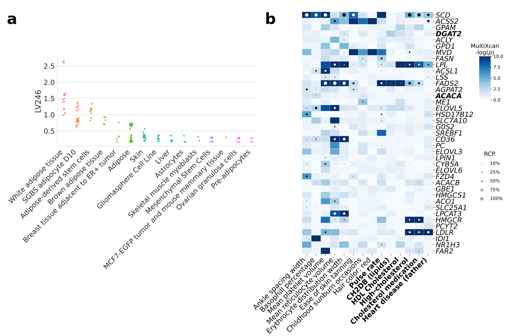Figure 2:Tissues and traits associated with a gene module related to lipid metabolism (LV246).a) Top cell types/tissues where LV246’s genes are expressed in.
Values in the \(y\)-axis come from matrix \(\mathbf{B}\) in the MultiPLIER models (Figure 1 b, see Methods).
In the \(x\)-axis, cell types/tissues are sorted by the maximum sample value.
b) Gene-trait associations (S-MultiXcan; threshold at -log(\(p\))=10) and colocalization probability (fastENLOC) for the top traits in LV246.
The top 40 genes in LV246 are shown, sorted by their LV weight (matrix \(\mathbf{Z}\)), from largest (the top gene SCD) to smallest (FAR2);
DGAT2 and ACACA, in boldface, are two of the six high-confidence genes in the lipids-increasing gene-set from the CRISPR-screen.
Cardiovascular-related traits are in boldface.
SGBS: Simpson Golabi Behmel Syndrome;
CH2DB: CH2 groups to double bonds ratio;
HDL: high-density lipoprotein;
RCP: locus regional colocalization probability.
Next, we analyzed all 987 LVs using Fast Gene Set Enrichment Analysis (FGSEA) [42], and found 15 LVs nominally enriched (unadjusted P < 0.01) with these lipid-altering gene-sets (Supplementary Tables 5 and 6).
Among those with reliable sample metadata, LV246, the top LV associated with the lipids-increasing gene-set, contained genes mainly co-expressed in adipose tissue (Figure 2 a), which plays a key role in coordinating and regulating lipid metabolism.
Using the gene-property analysis method, we found that gene weights for this LV were predictive of gene associations for plasma lipids and high cholesterol (Supplementary Table 8).
Two high-confidence genes from our CRISPR screening, DGAT2 and ACACA, are responsible for encoding enzymes for triglycerides and fatty acid synthesis and were among the highest-weighted genes of LV246 (Figure 2 b, in boldface).
However, in contrast to other members of this LV, DGAT2 and ACACA were not strongly associated nor colocalized with any of the cardiovascular-related traits and thus would not have been prioritized by TWAS alone;
other members of LV246, such as SCD, LPL, FADS2, HMGCR, and LDLR, were instead significantly associated and colocalized with lipid-related traits.
This lack of association/colocalization of two high-confidence genes from our CRISPR-screen might be explained from an omnigenic point of view [31].
Assuming that the TWAS models for DGAT2 and ACACA capture all common cis-eQTLs (the only genetic component of gene expression that TWAS can capture) and there are no rare cis-eQTLs, these two genes might represent “core” genes (i.e., they directly affect the trait with no mediated regulation of other genes), and many of the rest in the LV are “peripheral” genes that trans-regulate them.
These results suggested that our LV-based approach can contextualize genetic associations and prioritize alternative therapeutic targets, mainly when TWAS cannot detect them or hits are not druggable.
PhenoPLIER with LVs predicts drug-disease pairs better than single genes
We next determined the extent to which substituting LVs in place of individual genes predicted known treatment-disease relationships.
For this, we used the transcriptional responses to small molecule perturbations profiled in LINCS L1000 [33], which were further processed and mapped to DrugBank IDs [43,44,45].
Based on an established drug repurposing strategy that matches reversed transcriptome patterns between genes and drug-induced perturbations [46,47], we adopted a previously described framework that uses imputed transcriptomes from TWAS to prioritize drug candidates [48].
For this, we computed a drug-disease score by calculating the negative dot product between the \(z\)-scores for a disease (from TWAS) and the \(z\)-scores for a drug (from LINCS) across sets of genes of different size (see Methods).
Therefore, a large score for a drug-disease pair indicated that a higher (lower) predicted expression of disease-associated genes are down (up)-regulated by the drug, thus predicting a potential treatment.
Similarly, for the LV-based approach, we estimated how pharmacological perturbations affected the gene module activity by projecting expression profiles of drugs into our latent representation (Figure 1 b).
We used a manually-curated gold standard set of drug-disease medical indications [44,49] for 322 drugs across 53 diseases to evaluate the prediction performance.
Figure 3:Drug-disease prediction performance for gene-based and module-based approaches.
The receiver operating characteristic (ROC) (left) and the precision-recall curves (right) for a gene-based and our module-based approach.
AUC: area under the curve; AP: average precision.
The gene-trait associations and drug-induced expression profiles projected into the latent space represent a compressed version of the entire set of results.
Despite this information loss, the LV-based method outperformed the gene-based one with an area under the curve of 0.632 and an average precision of 0.858 (Figure 3).
The prediction results suggested that this low-dimensional space captures biologically meaningful patterns that can link pathophysiological processes with the mechanism of action of drugs.
We examined a specific drug-disease pair to determine whether the LVs driving the prediction were biologically plausible.
Nicotinic acid (niacin) is a B vitamin widely used clinically to treat lipid disorders, although there is controversy on its clinical utility to prevent cardiovascular disease [50,51,52].
Niacin exerts its effects on multiple tissues, although its mechanisms are not well understood [53,54,55,56].
This compound can increase high-density lipoprotein (HDL) by inhibiting an HDL catabolism receptor in the liver.
Niacin also inhibits diacylglycerol acyltransferase–2 (DGAT2), which decreases the production of low-density lipoproteins (LDL) by modulating triglyceride synthesis in hepatocytes or by inhibiting adipocyte triglyceride lipolysis [53].
Niacin was one of the drugs in the gold standard set indicated for atherosclerosis (AT) and coronary artery disease (CAD).
We observed that this compound was predicted by the gene-based and LV-based approach as a medical indication for coronary artery disease (CAD), with scores above the mean (0.51 and 0.96, respectively).
For AT, the LV-based approach predicted niacin as a therapeutic drug with a score of 0.52, whereas the gene-based method assigned a negative score of -0.01 (below the mean).
Since LVs represent interpretable features associated with specific cell types, we analyzed which LVs were positively contributing to these predictions (i.e., with an opposite direction between niacin and the disease).
Notably, LV246 (Figure 2), expressed in adipose tissue and liver and associated with plasma lipids and high cholesterol (Supplementary Table 8), was the 16th most important module in the prediction of niacin as a therapeutic drug for AT.
Besides the gold standard set, LV246 was among the top modules for other cardiovascular diseases, such as ischaemic heart disease (wide definition, 15th module) and high cholesterol (7th module).
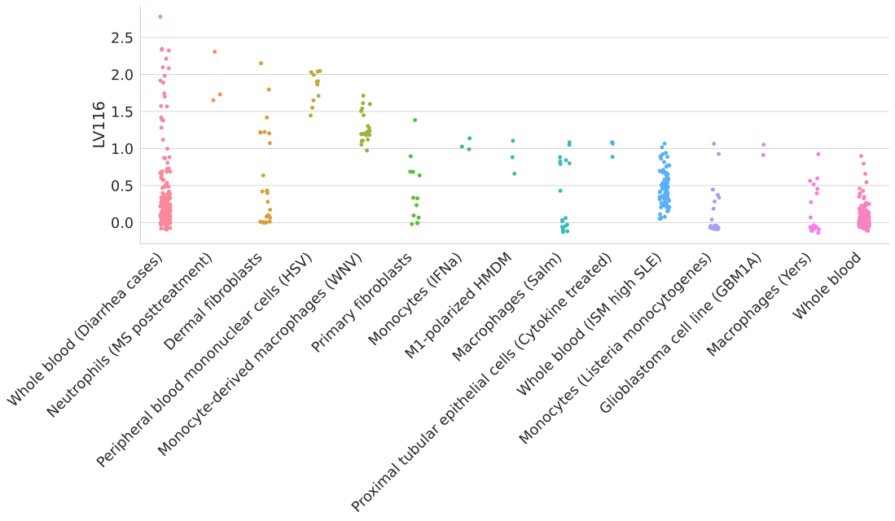Figure 4:Top cell types/tissues where LV116’s genes are expressed in.
Values in the \(y\)-axis come from matrix \(\mathbf{B}\) in the MultiPLIER models (Figure 1 b).
In the \(x\)-axis, cell types/tissues are sorted by the maximum sample value.
The figure shows a clear immune response with cell types under different stimuli.
MS: multiple sclerosis;
HSV: treated with herpes simplex virus;
WNV: infected with West Nile virus;
IFNa: treated with interferon-alpha;
HMDM: human peripheral blood mononuclear cell-derived macrophages;
Salm: infected with Salmonella typhimurium;
Yers: infected with Yersinia pseudotuberculosis;
ISM: Interferon Signature Metric;
SLE: Systemic lupus erythematosus.
The analysis of other top niacin-contributing LVs across different cardiovascular diseases revealed additional mechanisms of action.
For example, GPR109A/HCAR2 encodes a G protein-coupled high-affinity niacin receptor in adipocytes and immune cells, including monocytes, macrophages, neutrophils and dendritic cells [57,58].
It was initially thought that the antiatherogenic effects of niacin were solely due to inhibition of lipolysis in adipose tissue.
However, it has been shown that nicotinic acid can reduce atherosclerosis progression independently of its antidyslipidemic activity through the activation of GPR109A in immune cells [59], thus boosting anti-inflammatory processes [60].
In addition, flushing, a common adverse effect of niacin, is also produced by the activation of GPR109A in Langerhans cells (macrophages of the skin).
This alternative mechanism for niacin could have been hypothesized by examining the cell types where the top-contributing modules are expressed:
for instance, LV116 and LV931 (Figure 4, Supplementary Figure 13, and Supplementary Tables 10 and 11) were the top two modules for AT, with a strong signature in monocytes, macrophages, neutrophils, dendritic cells, among others.
In Figure 4, it can be seen that LV116’s genes are expressed as an immune response when these cell types are under different stimuli, such as diarrhea caused by different pathogens [61], samples from multiple sclerosis or systemic lupus erythematosus [62,63], or infected with different viruses (such as herpes simplex [64], West Nile virus [65], Salmonella typhimurium[66], among others).
These three LVs (LV246, LV116 and LV931) were among the top 20 modules contributing to the niacin prediction across different cardiovascular traits (Table 1).
Given the current controversy around this compound and its effect on cardiovascular disease, our approach may help to better understand different pathophysiological mechanisms linked with the mechanism of action of niacin.
Table 1: LVs among the top 20 contributors of prediction of niacin for five cardiovascular diseases. “Heart attack, angina, stroke or hypertension” refers to the UK Biobank data-field 6150. GWAS sample size: Atherosclerosis (361,194 in total and 566 cases), Chronic ischaemic heart disease (361,194 in total and 12,769 cases), Heart attack, angina, stroke or hypertension (360,420 in total and 253,565 cases), Ischaemic heart disease/wide definition (361,194 in total and 20,857 cases), High cholesterol/self-reported (361,141 in total and 43,957 cases).
LV
Cell type
Disease
LV116
Immune cells, skin
Atherosclerosis (ICD10 I70)
Chronic ischaemic heart disease (ICD10 I25)
Heart attack, angina, stroke or hypertension
Ischaemic heart disease (wide definition)
LV931
Immune cells
Atherosclerosis (ICD10 I70)
Heart attack, angina, stroke or hypertension
Ischaemic heart disease (wide definition)
LV246
Adipose tissue, liver
Atherosclerosis (ICD10 I70)
High cholesterol (self-reported)
Ischaemic heart disease (wide definition)
The LV-based method was able to integrate different data types to provide an interpretable approach for drug repositioning research based on genetic studies.
Additionally, our approach could also be helpful to understand better the mechanism of pharmacological effect of known or experimental drugs.
For example, LV66, one of the top LVs affected by niacin (Supplementary Figure 14) was mainly expressed in ovarian granulosa cells.
This compound has been very recently considered as a potential therapeutic for ovarian diseases [67,68], as it was found to promote follicle growth and inhibit granulosa cell apoptosis in animal models.
Our LV-based approach could be helpful to generate novel hypotheses to evaluate potential mechanisms of action, or even adverse effects, of different drugs.
LV projections reveal trait clusters with shared transcriptomic properties
Figure 5:Cluster analysis on traits using the latent gene expression representation.a) The projection of TWAS results on \(n\)=3,752 traits into the latent gene expression representation is the input data to the clustering process.
A linear (PCA) and non-linear (UMAP) dimensionality reduction techniques were applied to the input data, and the three data versions were processed by five different clustering algorithms.
These algorithms derive partitions from the data using different sets of parameters (such as the number of clusters), leading to an ensemble of 4,428 partitions.
Then, a distance matrix is derived by counting how many times a pair of traits were grouped in different clusters across the ensemble.
Finally, a consensus function is applied to the distance matrix to generate consolidated partitions with different numbers of clusters (from 2 to \(\sqrt{n}\approx\) 60).
These final solutions were represented in the clustering tree (Figure 6).
b) The clusters found by the consensus function were used as labels to train a decision tree classifier on the original input data, which detects the LVs that better differentiate groups of traits.
The previous results suggested that the compression into \(\hat{\mathbf{M}}\) increases the signal-to-noise ratio.
Thus, we analyzed \(\hat{\mathbf{M}}\) to find groups of traits that were affected by the same transcriptional processes.
To identify relationships that were robust to the selection of a specific clustering algorithm (each of which makes particular assumptions about the structure of data), we employed a consensus clustering approach.
Therefore, we applied different methods with varying sets of parameters and later combined these into a consolidated solution (Methods).
Our clustering pipeline generated 15 final consensus clustering solutions with 5 to 29 clusters (Supplementary Figure 15).
Instead of selecting a specific number of clusters, we used a clustering tree [69] (Figure 6) to examine stable groups of traits across multiple resolutions.
To understand which latent variables differentiated the group of traits, we trained a decision tree classifier on the input data \(\hat{\mathbf{M}}\) using the clusters found as labels.
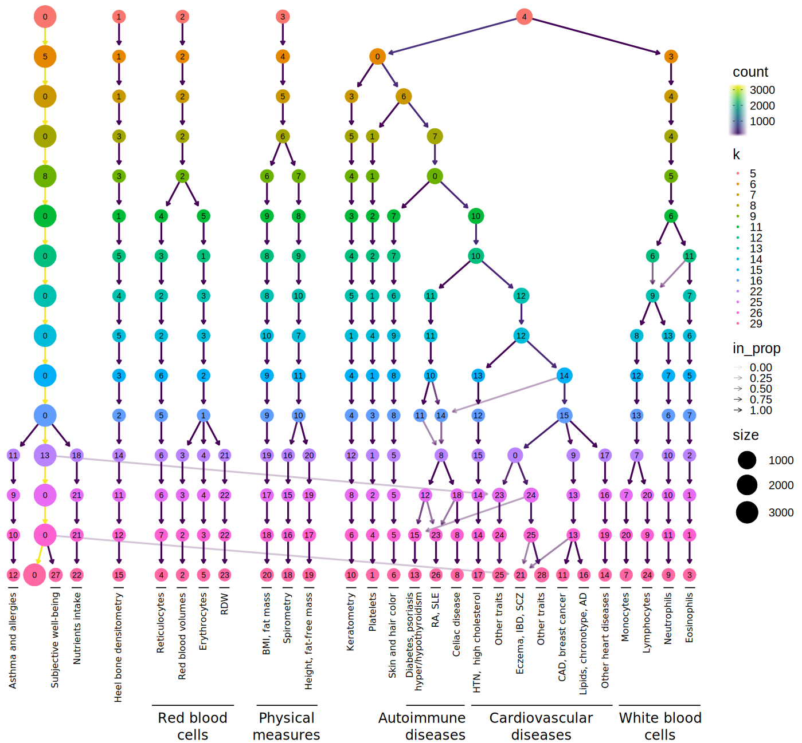Figure 6:Clustering tree using multiple resolutions for clusters of traits.
Each row represents a partition/grouping of the traits, and each circle is a cluster from that partition.
The number of clusters goes from 5 to 29.
Arrows indicate how traits in one cluster move across clusters from different partitions.
Most of the clusters are preserved across different resolutions, showing highly stable solutions even with independent runs of the clustering algorithm.
RDW: red cell (erythrocyte) distribution width;
BMI: body mass index;
WC: waist circumference;
HC: hip circumference;
RA: rheumatoid arthritis;
SLE: systemic lupus erythematosus;
HTN: Hypertension;
IBD: inflammatory bowel disease;
SCZ: Schizophrenia;
CAD: Coronary artery disease;
AD: Alzheimer’s disease;
Descriptions of traits by cluster ID (from left to right):
12: also includes lymphocyte count and allergies such as allergic rhinitis or eczema;
4: includes reticulocyte count and percentage, immature reticulocyte fraction, and high light scatter reticulocytes count and percentage;
2: includes mean corpuscular volume, mean corpuscular hemoglobin, mean reticulocyte volume, mean sphered cell volume;
5: includes erythrocyte count, hemoglobin concentration, and hematocrit percentage;
20: also includes weight, waist and hip circumference;
18: also includes body impedance measures and ankle spacing width;
19: also includes basal metabolic rate;
1: includes platelet count, crit, mean volume, and distribution width;
13: diabetes refers to age when diabetes was first diagnosed;
25: also includes vascular problems such as angina, deep vein thrombosis (DVT), intraocular pressure, eye and mouth problems, pulse rate, hand-grip strength, several measurements of physical activity, jobs involving heavy physical work, types of transport used, intake of vitamin/mineral supplements, and various types of body pain and medications for pain relief;
21: also includes attention deficit hyperactivity disorder (ADHD), number of years of schooling completed, bone density, and intracranial volume measurement;
28: includes diabetes, gout, arthrosis, and respiratory diseases (and related medications such as ramipril, allopurinol, and lisinopril), urine assays, female-specific factors (age at menarche, menopause, first/last live birth), and several environmental/behavioral factors such as intake of a range of food/drink items including alcohol, time spent outdoors and watching TV, smoking and sleeping habits, early-life factors (breastfed as a baby, maternal smoking around birth), education attainment, psychological and mental health, and health satisfaction;
11: also includes fasting blood glucose and insulin measurement;
16: lipids include high and low-density lipoprotein (HDL and LDL) cholesterol, triglycerides, and average number of methylene groups per a double bond;
14: includes myocardial infarction, coronary atherosclerosis, ischaemic heart disease (wide definition);
7: includes monocyte count and percentage;
24: includes lymphocyte count and percentage;
9: includes neutrophil count, neutrophil+basophil count, neutrophil+eosinophil count, granulocyte count, leukocyte count, and myeloid cell count;
3: includes eosinophil count, eosinophil percentage, and eosinophil+basophil count.
We found that phenotypes were grouped into five clear branches (Figure 6).
These were
0) a “large” branch that includes most of the traits subdivided only starting at \(k\)=16 (with asthma, subjective well-being traits, and nutrient intake clusters),
1) heel bone-densitometry measurements,
2) hematological assays on red blood cells,
3) physical measures, including spirometry and body impedance, and anthropometric traits with fat-free and fat mass measures in separate sub-branches, and
4) a “complex” branch including keratometry measurements, assays on white blood cells and platelets, skin and hair color traits, autoimmune disorders (type 1 diabetes, psoriasis, hyper/hypothyroidism, rheumatoid arthritis, systemic lupus erythematosus, celiac disease), and cardiovascular diseases (hypertension, coronary artery disease, myocardial infarction, hypercholesterolemia, and other cardiovascular-related traits such hand-grip strength [70], and environmental/behavioral factors such as physical activity and diet) (See Supplementary Files 2-6 for clustering results).
Within these branches, results were relatively stable.
The same traits were often clustered together across different resolutions, even with the consensus algorithm using random initializations at each level.
Arrows between different clusters show traits moving from one group to another across different resolutions.
This mainly happens between clusters within the “complex” branch, and between clusters from the “large” branch to the “complex” branch.
We would expect that continuing to explore higher dimensionalities would result in further subdivisions of these large groupings.
This behavior was expected since complex diseases are usually associated with shared genetic and environmental factors and are thus hard to categorize into a single cluster.
We would also expect that exploring solutions with a larger number of clusters would result in further subdivisions of these large groupings.
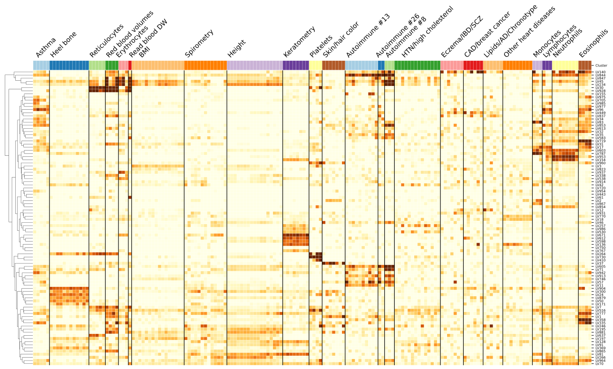Figure 7:Cluster-specific and general transcriptional processes associated with disease.
The plot shows a submatrix of \(\hat{\mathbf{M}}\) for the main trait clusters at \(k\)=29, considering only LVs (rows) that are well-aligned with at least one pathway.
Standardized values from -5 (lighter color) to 16 (darker color).
Next, we analyzed which LVs were driving these clusters of traits.
We trained decision tree classifiers on the input data (Figure 5) using each cluster at \(k\)=29 (bottom of Figure 6) as labels (see Methods).
This yielded for each cluster the top LVs, where several of them were well-aligned to existing pathways (Figure 7), and others were novel and expressed in relevant tissues (Supplementary Figure 16).
In Figure 7, it can be seen that some LVs were highly specific to certain types of traits, while others were associated with a wide range of different phenotypes, thus potentially involved in more general biological functions.
For example, LVs such as LV928 and LV30, which were well-aligned to early progenitors of the erythrocytes lineage [71] (Supplementary Tables 13 and 16), were predominantly expressed in early differentiation stages of erythropoiesis (Supplementary Figures 17 and 18) and strongly associated with different assays on red blood cells (FDR < 0.05; Supplementary Tables 14, 15, and 18).
In contrast, other LVs were highly specific, such as LV730, which is expressed in thrombocytes from different cancer samples (Supplementary Figures 19 and Supplementary Table 19), and strongly associated with hematological assays on platelets (FDR < 2e-4, Supplementary Table 20);
or LV598, whose genes were expressed in corneal endothelial cells (Supplementary Figures 20 and Supplementary Table 22) and associated with keratometry measurements (FDR < 4e-05; Supplementary Table 23).
The autoimmune diseases sub-branch also had significant LVs associations expressed in relevant cell types.
LV844 was the most strongly associated gene module with autoimmune disorders in both PhenomeXcan (FDR < 7e-16; Supplementary Tables 26) and eMERGE (FDR < 2e-6, 27), and was expressed in a wide range of cell types, including blood, breast organoids, myeloma cells, lung fibroblasts, and different cell types from the brain (Supplementary Figures 21 and Supplementary Table 25).
LV155 was strongly expressed in the thyroid (Supplementary Figures 22 and Supplementary Table 28) and significantly associated with hypothyroidism both in PhenomeXcan (FDR < 0.05, Supplementary Table 29) and eMERGE (FDR < 0.10, Supplementary Table 30).
Other important LVs associated with autoimmunity in both PhenomeXcan and eMERGE were LV57, expressed in T cells (Supplementary Figure 23 and Supplementary Tables 31, 32, 33), and LV54, expressed in different soft tissue tumors, breast, lung, pterygia and epithelial cells (Supplementary Figure 24 and Supplementary Tables 34, 35, 36).
The cardiovascular sub-branch also exhibited significant associations.
LV847 (Supplementary Figure 25 and Supplementary Table 37) was strongly associated with hypertension in PhenomeXcan (FDR < 2e-13, Supplementary Tables 38) and several cardiovascular diseases, type 1 diabetes, prostate cancer, and others in eMERGE (FDR < 0.05, Supplementary Table 39).
LV847 was expressed in CD19 (B cells) (which are related to preeclampsia [72]), Jurkat cells (T lymphocyte cells), and cervical carcinoma cell lines (the uterus was previously reported to be linked to blood pressure through a potential hormonal pathway [73,74]).
LV136 was aligned with known collagen formation and muscle contraction pathways (Supplementary Table 40), and it was associated with coronary artery disease (FDR < 2e-8), myocardial infarction (FDR < 6e-4) and keratometry measurements (FDR < 1e-7) in PhenomeXcan (Supplementary Tables 41), but with no strong associations in eMERGE (FDR < 0.20, Supplementary Table 42).
This LV was expressed in a wide range of cell types, including fibroblasts, mesenchymal stem cells, osteoblasts, pancreatic stellate cells, cardiomyocytes, and adipocytes (Supplementary Figure 26).
Lipids, clustered with chronotype and Alzheimer’s disease, were significantly associated with several modules expressed mainly in brain cell types, including LV93 (Supplementary Figure 27 and Supplementary Tables 43, 44, 45), LV206 (Supplementary Figure 28 and Supplementary Tables 46, 47, 48), and LV260 (Supplementary Figure 29 and Supplementary Tables 49, 50 and 51).
These modules were associated mainly with cardiovascular traits in eMERGE.
Within the cardiovascular sub-branch, we found neuropsychiatric and neurodevelopmental disorders such as Alzheimer’s disease, schizophrenia, and attention deficit hyperactivity disorder (ADHD).
These disorders were previously linked to the cardiovascular system [75,76,77,78] and share several risk factors, including hypertension, high cholesterol, obesity, smoking, among others [79,80].
In our results, however, these diseases were grouped by potentially shared transcriptional processes expressed in specific tissues/cell types.
Alzheimer’s disease, for example, was significantly associated with LV21 in PhenomeXcan (FDR < 2e-19, Supplementary Table 53) and with LV5 (FDR < 3e-3, Supplementary Table 56).
LV21 was strongly expressed in a variety of soft tissue sarcomas, monocytes/macrophages (including microglia from cortex samples), and aortic valves (Supplementary Figure 30 and Supplementary Table 52).
This LV was also associated with lipids: LDL cholesterol (FDR < 1e-4) and triglycerides (FDR < 0.02).
As discussed previously, macrophages play a key role in the reverse cholesterol transport and thus atherogenesis [81], and lipid metabolism in microglia has been recently identified as an important factor in the development of neurodegenerative diseases [82].
On the other hand, LV5 was expressed in breast cancer and brain glioma samples, microglia (cortex), liver, and kidney, among other cell types (Supplementary Figure 31 and Supplementary Table 55).
In addition to lipids, LV5 was also associated with depression traits from the UK Biobank (FDR < 0.05, Supplementary Table 56).
Since Alzheimer’s disease was not present in eMERGE, we could not replicate this association.
ADHD was the only significantly associated trait for LV434 (FDR < 6e-3) (Supplementary Table 59), which was expressed in breast cancer and glioma cells, cerebral organoids, and several different cell populations from the brain: fetal neurons (replicating and quiescence), microglia, and astrocytes (Supplementary Figure 32 and Supplementary Table 58).
Schizophrenia was not significantly associated (FDR < 0.05) with any gene module tested in our analysis.
None of these LVs were significantly aligned to prior pathways, which might represent potentially novel transcriptional processes affecting the cardiovascular and central nervous systems.
Discussion
We have introduced a novel computational strategy that integrates statistical associations from TWAS with groups of genes (gene modules) that have similar expression patterns across the same cell types.
Our key innovation is that we project gene-trait associations through a latent representation derived not strictly from measures of normal tissue but also cell types under a variety of stimuli and at various developmental stages.
This improves interpretation by going beyond statistical associations to infer cell type-specific features of complex phenotypes.
We found that our approach can identify disease-relevant cell types from summary statistics, and several disease-associated gene modules were replicated in eMERGE.
Using a CRISPR screen to analyze lipid regulation, we found that our gene module-based approach can prioritize causal genes even when single gene associations are not detected.
We interpret these findings with an omnigenic perspective of “core” and “peripheral” genes, suggesting that the approach can identify genes that directly affect the trait with no mediated regulation of other genes, and thus prioritize alternative and potentially more attractive therapeutic targets.
Using our gene module perspective, we also integrated drug-induced transcriptional profiles, which allowed us to connect diseases, drugs, and cell types.
Furthermore, and beyond statistical prediction, we focused on a particular drug (niacin) and set of traits (cardiovascular diseases) to show that the approach connects disease-relevant transcriptional processes with known mechanisms of action.
This suggests that the conceptual approach may reveal the mechanisms of pharmacological effect of known or experimental drugs.
Finally, we found that the analysis of associations through latent representations provided reasonable groupings of diseases and traits affected by shared and distinct transcriptional mechanisms expressed in highly relevant tissues.
In some cases, the features/LVs linked to phenotypes appear to be associated with specific cell types.
Associations with such cell type marker genes may reveal potentially causal cell types for a phenotype with more precision.
We observed modules expressed primarily in one tissue (such as adipose in LV246, thyroid in LV155, or ovary in LV66).
Others appeared to be expressed in many contexts, and these may capture pathways associated with a set of related complex diseases.
For example, LV136 is associated with cardiovascular disease and measures of corneal biomechanics, and expressed in fibroblasts, osteoblasts, pancreas, liver, and cardiomyocytes, among others.
Another example is LV844, expressed in whole blood samples and strongly associated with a range of autoimmune diseases.
From an omnigenic point of view, these patterns might represent cases of “network pleiotropy,” where the same cell types mediate molecularly related traits.
To our knowledge, projection through a representation learned on complementary but distinct datasets is a novel approach to identify cell type and pathway effects on complex phenotypes that is computationally simple to implement.
Our approach rests on the assumption that gene modules with coordinated expression patterns will also manifest coordinated pathological effects.
Our implementation in this work integrates two complementary approaches.
The first is MultiPLIER, which extracts latent variables from large expression datasets, and these LVs could represent either real transcriptional processes or technical factors (“batch effects”).
We used a previously published model derived from recount2, which was designed to analyze rare disorders but might not be the optimal latent representation for the wide range of complex diseases considered here.
Also, the underlying factorization method rests on linear combinations of variables, which could miss important and more complex co-expression patterns.
In addition, recount2, the training dataset used, has since been surpassed in size and scale by other resources [15,83].
The second approach we used in this study is TWAS, where we are only considering the hypothesis that GWAS loci affect traits via changes in gene expression, and other effects such as coding variants disrupting protein-protein interactions are not captured.
Additionally, TWAS has several limitations that can lead to false positives [84,85].
Like GWAS, which generally detects groups of associated variants in linkage disequilibrium (LD), TWAS usually identifies several genes within the same locus [20,86].
This is due to sharing of GWAS variants in gene expression models, correlated expression of nearby genes, or even correlation of their predicted expression due to eQTLs in LD, among others [84].
Larger datasets and methods designed to learn representations with this application in mind could further refine the approach and are a promising avenue for future research.
Our findings are concordant with previous studies showing that drugs with genetic support are more likely to succeed through the drug development pipeline [7,48].
In this case, projecting association results through latent variables better prioritized disease-treatment pairs than considering single-gene effects alone.
An additional benefit is that the latent variables driving predictions can be examined to infer potential mechanisms of action.
Here we prioritized drugs for diseases with very different tissue etiologies, and a challenge of the approach is to select the most appropriate tissue model from TWAS to find reversed transcriptome patterns between genes and drug-induced perturbations.
We also demonstrated that clustering trees, introduced initially as a means to examine developmental processes in single-cell data, provide a multi-resolution grouping of phenotypes based on latent variable associations.
We employed hard-partitioning algorithms (one trait belongs exclusively to one cluster) where the distance between two traits takes into account all gene modules.
However, it is also plausible for two complex diseases to share only a few biological processes instead of being similar across most of them.
In this portion, we used S-MultiXcan associations, which only provide the association strength between a gene and a trait, but with no direction of effect.
This does mean that traits are grouped based on associated genes, but genes could have opposite effects on traits within the same cluster.
Considering groups of related diseases was previously shown to be more powerful to detect shared genetic etiology [87,88], and clustering trees provide a way to explore such relationships in the context of latent variables.
Finally, our TWAS results were derived from a large set of GWAS of different sample sizes and qualities.
Although the potential issues derived from this data heterogeneity were addressed before performing cluster analysis of traits, data preprocessing steps are always challenging and might not avoid bias altogether.
Ultimately, the quality of the representations is essential to performance.
Here we used a representation derived from a factorization of bulk RNA-seq data.
Detailed perturbation datasets and single-cell profiling of tissues, with and without perturbagens, and at various stages of development provide an avenue to generate higher quality and more interpretable representations.
On the other hand, the key to interpretability is driven by the annotation of sample metadata.
New approaches to infer and annotate with structured metadata are promising and can be directly applied to existing data [89].
Rapid improvements in both areas set the stage for latent variable projections to be widely applied to disentangle the genetic basis of complex human phenotypes.
By providing a new perspective for a mechanistic understanding of statistical associations from TWAS, our method can generate testable hypotheses for the post-GWAS functional characterization of complex diseases, which will likely be an area of great importance in the coming years.
Methods
PhenomeXcan: gene-based associations on 4,091 traits
We used TWAS results from PhenomeXcan [32] on 4,091 traits for 22,515 genes.
PhenomeXcan was built using publicly available GWAS summary statistics to compute
1) gene-based associations with the PrediXcan family of methods [19,20,90], and
2) a posterior probability of colocalization between GWAS loci and cis-eQTL with fastENLOC [32,91].
The PrediXcan family of methods first builds prediction models using data from the Genotype-Tissue Expression project (GTEx v8) [4] for gene expression imputation and then correlate this predicted expression with the phenotype of interest.
This family is comprised of
S-PrediXcan [90] (which computes a gene-tissue-trait association using GWAS as input)
and S-MultiXcan [19] (which computes a gene-trait association by aggregating evidence of associations across all tissues).
We refer to the standardized effect sizes (\(z\)-scores) of S-PrediXcan across \(n\) traits and \(m\) genes in tissue \(t\) as \(\mathbf{M}^{t} \in \mathbb{R}^{n \times m}\).
For S-MultiXcan, we do not have the direction of effect, and we used the \(p\)-values converted to \(z\)-scores \(\mathbf{M}=\Phi^{-1}(1 - p/2)\), where \(\Phi^{-1}\) is the probit function.
Higher \(z\)-scores correspond to stronger associations.
MultiPLIER and Pathway-level information extractor (PLIER)
MultiPLIER [34] extracts patterns of co-expressed genes from recount2 [14], a large gene expression dataset.
The approach applies the pathway-level information extractor method (PLIER) [35], which performs unsupervised learning using prior knowledge (canonical pathways) to reduce technical noise.
Via a matrix factorization approach, PLIER deconvolutes the gene expression data into a set of latent variables (LV), where each represents a gene module.
This reduced the data dimensionality into 987 latent variables or gene modules.
Given a gene expression dataset \(\mathbf{Y}^{m \times c}\) with \(m\) genes and \(c\) experimental conditions and a prior knowledge matrix \(\mathbf{C} \in \{0,1\}^{m \times p}\) for \(p\) MSigDB pathways [92] (so that \(\mathbf{C}_{ij} = 1\) if gene \(i\) belongs to pathway \(j\)), PLIER finds \(\mathbf{U}\), \(\mathbf{Z}\), and \(\mathbf{B}\) minimizing
subject to \(\mathbf{U}>0, \mathbf{Z}>0\);
\(\mathbf{Z}^{m \times l}\) are the gene loadings with \(l\) latent variables,
\(\mathbf{B}^{l \times c}\) is the latent space for \(c\) conditions,
\(\mathbf{U}^{p \times l}\) specifies which of the \(p\) prior-information pathways in \(\mathbf{C}\) are represented for each LV,
and \(\lambda_i\) are different regularization parameters used in the training step.
\(\mathbf{Z}\) is a low-dimensional representation of the gene space where each LV aligns as much as possible to prior knowledge, and it might represent either a known or novel gene module (i.e., a meaningful biological pattern) or noise.
We projected \(\mathbf{M}\) (either from S-PrediXcan across each tissue, or S-MultiXcan) into the low-dimensional gene module space learned by MultiPLIER using
where in \(\hat{\mathbf{M}}^{l \times n}\) all traits in PhenomeXcan are now described by gene modules.
LV-trait associations via gene-property analysis
To compute an association between a gene module and a trait, we used an approach similar to the gene-property analysis in MAGMA [40],
which is essentially a competitive test using gene weights from \(\mathbf{Z}\) to predict gene \(z\)-scores from \(\mathbf{M}\).
Thus, the regression model uses genes as data points by fitting \(\mathbf{m}=\beta_0 + \mathbf{z} \beta_z + \epsilon\), where \(\epsilon \sim \mathrm{MVN}(0, \hat{\Sigma})\), \(\mathbf{m}\) are gene \(p\)-values (for a trait) from S-MultiXcan that we transformed to \(z\)-scores as mentioned before.
Since we are only interested in whether genes with a stronger membership to a module (highest weights) are more associated with the phenotype, we performed a one-sided test on the coefficient \(\beta_z\) with the null hypothesis of \(\beta_z = 0\) against the alternative \(\beta_z>0\).
Since the error terms \(\epsilon\) could be correlated due to correlation between predicted expression, we used a generalized least squares approach instead of standard linear regression.
To calculate \(\hat\Sigma\), we first estimated the correlation of predicted expression for each gene pair \((\mathbf{t}_i, \mathbf{t}_j)\) in tissue \(t\) using equations from [19,90]:
where \(\Gamma = \widehat{\mathrm{var}}(\mathbf{X}) = (\mathbf{X} - \mathbf{\bar{X}})^{\top} (\mathbf{X} - \mathbf{\bar{X}}) / (m-1)\) is the genotype covariance matrix using 1000 Genomes Project data [93,94].
The variances for predicted gene expression of gene \(i\) is estimated as:
Finally, \(\hat{\Sigma} = \sum_t \hat{\Sigma}^t / |t|\) where \(|t|\)=49 is the number of tissues.
Because of computational reasons, we did not run the gene-property analysis on all possible LV-trait pairs.
In PhenomeXcan, we reduced the number of LV-trait pairs by considering only the top discriminative LVs for each cluster (see “Cluster interpretation” section in Methods) and the traits in that cluster, leading to 5,782 LV-trait tests.
For replication in eMERGE, we selected all the 25 LVs analyzed in the main text and ran the gene-property analysis against all 309 traits in this cohort, leading to 7,725 tests.
We adjusted the \(p\)-values using the Benjamini-Hochberg procedure.
Drug-disease prediction
For the drug-disease prediction, we used a method based on a drug repositioning framework previously used for psychiatry traits [48] where gene-trait associations are anticorrelated with expression profiles for drugs.
For the single-gene approach, we computed a drug-disease score by multiplying each S-PrediXcan set of results in tissue \(t\), \(\mathbf{M}^t\), with the transcriptional responses profiled in LINCS L1000 [33], \(\mathbf{L}^{c \times m}\) (for \(c\) compounds): \(\mathbf{D}^{t,k}=-1 \cdot \mathbf{M}^{t,k} \mathbf{L}^\top\), where \(k\) refers to the number of most significant gene associations in \(\mathbf{M}^t\) for each trait.
As suggested in [48], \(k\) could be either all genes or the top 50, 100, 250, and 500; then we average score ranks across all \(k\) and obtain \(\mathbf{D}^t\).
Finally, for each drug-disease pair, we took the maximum prediction score across all tissues: \(\mathbf{D}_{ij} = \max \{ \mathbf{D}_{ij}^t \mid \forall t \}\).
The same procedure was used for the gene module-based approach, where we projected S-PrediXcan results into our latent representation, leading to \(\hat{\mathbf{M}}^t\);
and also \(\mathbf{L}\), leading to \(\hat{\mathbf{L}}^{l \times c}\).
Finally, \(\mathbf{D}^{t,k}=-1 \cdot \hat{\mathbf{M}}^{t,k} \hat{\mathbf{L}}^\top\), where in this case \(k\) could be all LVs or the top 5, 10, 25 and 50 (since we have an order of magnitude less LVs than genes).
Since the gold standard of drug-disease medical indications used contained Disease Ontology IDs (DOID) [95], we mapped PhenomeXcan traits to the Experimental Factor Ontology [96] using [97], and then to DOID.
Consensus clustering of traits
We performed two preprocessing steps on the S-MultiXcan results before the cluster analysis procedure.
First, we combined results in \(\mathbf{M}\) (S-MultiXcan) for traits that mapped to the same Experimental Factor Ontology (EFO) [96] term using the Stouffer’s method: \(\sum w_i M_{ij} / \sqrt{\sum w_i^2}\), where \(w_i\) is a weight based on the GWAS sample size for trait \(i\), and \(M_{ij}\) is the \(z\)-score for gene \(j\).
Second, we standardized all \(z\)-scores for each trait \(i\) by their sum to reduce the effect of highly polygenic traits: \(M_{ij} / \sum M_{ij}\).
Finally, we projected this data matrix using Equation 2, obtaining \(\hat{\mathbf{M}}\) with \(n\)=3,752 traits and \(l\)=987 LVs as the input of our clustering pipeline.
A partitioning of \(\hat{\mathbf{M}}\) with \(n\) traits into \(k\) clusters is represented as a label vector \(\pi \in \mathbb{N}^n\).
Consensus clustering approaches consist of two steps:
1) the generation of an ensemble \(\Pi\) with \(r\) partitions of the dataset: \(\Pi=\{\pi_1, \pi_2, \ldots, \pi_r\}\),
and 2) the combination of the ensemble into a consolidated solution defined as:
where \(\mathcal{L}^i\) is a set of data indices with known cluster labels for partition \(i\),
\(\phi\colon \mathbb{N}^n \times \mathbb{N}^n \to \mathbb{R}\) is a function that measures the similarity between two partitions,
and \(Q\) is a measure of central tendency, such as the mean or median.
We used the adjusted Rand index (ARI) [98] for \(\phi\), and the median for \(Q\).
To obtain \(\pi^*\), we define a consensus function \(\Gamma\colon \mathbb{N}^{n \times r} \to \mathbb{N}^n\) with \(\Pi\) as the input.
We used consensus functions based on the evidence accumulation clustering (EAC) paradigm [99], where \(\Pi\) is first transformed into a distance matrix
\(\mathbf{D}_{ij} = d_{ij} / r\),
where \(d_{ij}\) is the number of times traits \(i\) and \(j\) were grouped in different clusters across all \(r\) partitions in \(\Pi\).
Then, \(\Gamma\) can be any similarity-based clustering algorithm, which is applied on \(\mathbf{D}\) to derive the final partition \(\pi^*\).
For the ensemble generation step, we used different algorithms to create a highly diverse set of partitions (see Figure 5) since diversity is an important property for ensembles [100,101,102].
We used three data representations: the raw dataset, its projection into the top 50 principal components, and the embedding learned by UMAP [103] using 50 components.
For each of these, we applied five clustering algorithms, covering a wide range of different assumptions on the data structure: \(k\)-means [104], spectral clustering [105], a Gaussian mixture model (GMM), hierarchical clustering, and DBSCAN [106].
For \(k\)-means, spectral clustering and GMM, we specified a range of \(k\) between 2 and \(\sqrt{n} \approx 60\), and for each \(k\) we generated five partitions using random seeds.
For hierarchical clustering, for each \(k\) we generated four partitions using four common linkage criteria: ward, complete, average and single.
For DBSCAN, we combined different ranges for parameters \(\epsilon\) (the maximum distance between two data points to be considered part of the same neighborhood) and minPts (the minimum number of data points in a neighborhood for a data point to be considered a core point).
Specifically, we used minPts values from 2 to 125, and for each data version, we determined a plausible range of \(\epsilon\) values by observing the distribution of the mean distance of the minPts-nearest neighbors across all data points.
Since some combinations of minPts and \(\epsilon\) might not produce a meaningful partition (for instance, when all points are detected as noisy or only one cluster is found), we resampled partitions generated by DBSCAN to ensure an equal representation in the ensemble.
This procedure generated a final ensemble of 4,428 partitions.
Finally, we used spectral clustering on \(\mathbf{D}\) to derive the final consensus partitions.
\(\mathbf{D}\) was first transformed into a similarity matrix by applying an RBF kernel \(\mathrm{exp}(-\gamma \mathbf{D}^2)\) using four different values for \(\gamma\) that we empirically determined to work best.
Thus for each \(k\) between 2 and 60, we derived four consensus partitions and selected the one that maximized Equation 5.
We further filtered this set of 59 solutions to keep only those with an ensemble agreement larger than the 75th percentile, leaving a total of 15 final consensus partitions shown in Figure 6.
Cluster interpretation
We used a supervised learning approach to interpret clustering results by detecting which gene modules are the most important for clusters of traits.
For this, we used the highest resolution partition (\(k\)=29, although any could be used) to train a decision tree model using each of the clusters as labels and the projected data \(\hat{\mathbf{M}}\) as the training samples.
For each \(k\), we built a set of binary labels with the current cluster’s traits as the positive class and the rest of the traits as the negative class.
Then, we selected the LV in the root node of the trained model only if its threshold was positive and larger than one standard deviation.
Next, we removed this LV from \(\hat{\mathbf{M}}\) (regardless of being previously selected or not) and trained the model again.
We repeated this procedure 20 times to extract the top 20 LVs that better discriminate traits in a cluster from the rest.
CRISPR-Cas9 screening
Cell culture.
HepG2 cells were obtained from ATCC (ATCC® HB-8065™), and maintained in Eagle’s Minimum Essential Medium with L-Glutamine (EMEM, Cat. 112-018-101, Quality Biology) supplemented with 10% Fetal Bovine Serum (FBS, Gibco, Cat.16000-044), and 1% Pen/Strep (Gibco, Cat.15140-122).
Cells were kept at 37oC in a humidity-controlled incubator with 5% CO2, and were maintained at a density not exceed more than 80% confluency.
Genome-wide lentiviral pooled CRISPR-Cas9 library.
3rd lentiviral generation, Broad GPP genome-wide Human Brunello CRISPR knockout Pooled library was provided by David Root and John Doench from Addgene (Cat. 73179-LV), and was used for HepG2 cell transduction.
It consists of 76,441 sgRNAs, targets 19,114 genes in the human genome with an average of 4 sgRNAs per gene.
Each 20nt sgRNA cassette was inserted into lentiCRIS-PRv2 backbone between U6 promoter and gRNA scaffold.
Through cell transduction, the lentiviral vectors which encode Cas9 were used to deliver the sgRNA cassette containing plasmids into cells during cell replication.
Unsuccessful transduced cells were excluded through puromycin selection.
Lentiviral titer determination.
No-spin lentiviral transduction was utilized for the screen.
In a Collagen-I coated 6-wells plate, approximate 2.5 M cells were seeded each well in the presence of 8ug/ml polybrene (Millipore Sigma, Cat. TR-1003 G), and a different titrated virus volume (e.g., 0, 50, 100, 200, 250, and 400ul) was assigned to each well.
EMEM complete media was added to make the final volume of 1.24ml. 16-18hrs post transduction, virus/polybrene containing media was removed from each well.
Cells were washed twice with 1x DPBS, and replaced with fresh EMEM.
At 24h, cells in each well were trypsinized, diluted (e.g.,1:10), and seeded in pairs of wells of 6-well plates. At 60hr post transduction, cell media in each well was replaced with fresh EMEM. 2ug/ml of puromycin (Gibco, Cat. A1113803) was added to one well out of the pair. 2-5 days after puromycin selection, or the 0 virus well treated with puromycin had no survival of cells, cells in both wells with/without puromycin were collected and counted for viability.
Percentage of Infection (PI%) was obtained by comparing the cell numbers with/without puromycin selection within each pair.
By means of Poisson’s distribution theory, when transduction efficiency (PI%) is between 30-50%, which corresponding to an MOI (Multiplicity of Infection) of ~0.35-0.70. At MOI equal or close to 0.3, around 95% of infected cells are predicted to have only one copy of virus.
Therefore, a volume of virus (120ul) yielding 30-40% of transduction efficiency was chosen for further large-scale viral transduction.
Lentiviral Transduction in HepG2 Using Brunello CRISPR Knockout Pooled Library.
In order to achieve a coverage (representation) of at least 500 cells per sgRNA, and at an MOI between 0.3-0.4 to ensure 95% of infected cells get only one viral particle per cell, ~200M cells were initiated for the screen.
Transduction was carried out in the similar fashion as described above.
Briefly, 2.5M cells were seeded in each well of 14 6-well plates, along with 8ug/ml of polybrene.
Volume of 120ul of virus was added to each experimental well. 18hrs post transduction, virus/PB mix medium was removed, and cells in each well were collect-ed, counted, and pooled into T175 flasks.
At 60hr post transduction, 2ug/ml of puromycin was added to each flask.
Mediums were changed every 2 days with fresh EMEM, topped with 2ug/ml puromycin. 7 days after puromycin selection, cells were collected, pooled, counted, and replated.
Fluorescent dye staining. 9 days after puromycin selection, cells were assigned to 2 groups. 20-30M cells were collected as Unsorted Control.
Cell pellet was spun down at 500 x g for 5min at 4oC.
Dry pellet was kept at -80oC for further genomic DNA isolation.
The rest of the cells (approximately 200M) were kept in 100mm dishes, and stained with fluorescent dye (LipidSpotTM 488, Biotium, Cat. 70065-T).
In Brief, LipidSpot 488 was diluted to 1:100 with DPBS. 4ml of staining solution was used for each dish, and incubated at 37oC for 30min.
Cell images were captured through fluorescent microscope EVOS for GFP signal detection (Supplementary Figure 8).
Fluorescence-activated cell sorting (FACS).
Cells were immediately collected into 50ml tubes (From this point on, keep cells cold), and spin at 500 x g for 5min at 4oC.
After DPBS wash, cell pellets were resuspended with FACS Sorting Buffer (1x DPBS without Ca2+/Mg2+, 2.5mM EDTA, 25mM HEPES, 1% BSA.
Solution was filter sterilized, and kept at 4oC), pi-pet gently to make single cells.
Cell solution then filtered through cell strainer (Falcon, Cat. 352235), and were kept on ice protected from light.
Collected cells were sorted on FACSJazz. 100um nozzle was used for sorting. ~20% of each GFP-High and GFP-Low (Supplementary Figure 9) were collected into 15ml tubes.
After sorting, cells were immediately spun down. Pellets were kept in -80oC for further genomic DNA isolation.
Genomic DNA isolation and verification.
3 conditions of Genomic DNA (Un-Sorted Control, lentiV2 GFP-High, and lentiV2 GFP-Low) were extracted using QIAamp DNA Blood Mini Kit (Qiagen, Cat.51104), followed by UV Spectroscopy (Nanodrop) to access the quality and quantity of the gDNA.
Total 80-160ug of gDNA was isolated for each condition. sgRNA cassette and lentiviral specific transgene in isolated gDNA were verified through PCR (Supplementary Figure 10).
Illumina libraries generation and sequencing.
Fragment containing sgRNA cassette was amplified using P5 /P7 primers, as indicated in [107] and primer sequences were adapted from Broad Institute protocol (Supplementary Figure 11).
Stagger sequence (0-8nt) was included in P5, and 8bp uniquely barcoded sequence in P7.
Primers were synthesized through Integrated DNA Technologies (IDT), each primer was PAGE purified. 32 PCR reactions were set up for each condition.
Each 100ul PCR reaction consists of roughly 5ug of gDNA, 5ul of each 10uM P5 and P7. ExTaq DNA Polymerase (TaKaRa, Cat. RR001A) was used to amplify the amplicon.
PCR Thermal Cycler Parameters set as: Initial at 95oC for 1min; followed by 24 cycles of Denaturation at 94oC for 30 seconds, Annealing at 52.5oC for 30 seconds, Extension at 72oC for 30 seconds.
A final Elongation at 72oC for 10 minutes. 285bp-293bp PCR products were expected (Supplementary Figure 12 A).
PCR products within the same condition were pooled and purified using SPRIselect beads (Beckman Coulter, Cat. B23318).
Purified illumina libraries were quantitated on Qubit, and the quality of the library were analyzed on Bio-analyzer using High Sensitivity DNA Chip.
A single approximate 285bp peak was expected. (Supplementary Figure 12 B).
Final illumina library samples were sequenced on Nova-seq 6000.
Samples were pooled and loaded on a SP flow cell, along with 20% PhiX control v3 library spike-in.
3. A large-scale analysis of tissue-specific pathology and gene expression of human disease genes and complexes
K. Lage, N. T. Hansen, E. O. Karlberg, A. C. Eklund, F. S. Roque, P. K. Donahoe, Z. Szallasi, T. S. Jensen, S. Brunak Proceedings of the National Academy of Sciences (2008-12-22) https://doi.org/d5qcv9
DOI: 10.1073/pnas.0810772105 · PMID: 19104045 · PMCID: PMC2606902
5. Index and biological spectrum of human DNase I hypersensitive sites
Wouter Meuleman, Alexander Muratov, Eric Rynes, Jessica Halow, Kristen Lee, Daniel Bates, Morgan Diegel, Douglas Dunn, Fidencio Neri, Athanasios Teodosiadis, … John Stamatoyannopoulos Nature (2020-07-29) https://doi.org/gg6dhp
DOI: 10.1038/s41586-020-2559-3 · PMID: 32728217 · PMCID: PMC7422677
6. Mechanisms of tissue and cell-type specificity in heritable traits and diseases
Idan Hekselman, Esti Yeger-Lotem Nature Reviews Genetics (2020-01-08) https://doi.org/ggkx9v
DOI: 10.1038/s41576-019-0200-9 · PMID: 31913361
7. The support of human genetic evidence for approved drug indications
Matthew R Nelson, Hannah Tipney, Jeffery L Painter, Judong Shen, Paola Nicoletti, Yufeng Shen, Aris Floratos, Pak Chung Sham, Mulin Jun Li, Junwen Wang, … Philippe Sanseau Nature Genetics (2015-06-29) https://doi.org/f3mn52
DOI: 10.1038/ng.3314 · PMID: 26121088
8. Are drug targets with genetic support twice as likely to be approved? Revised estimates of the impact of genetic support for drug mechanisms on the probability of drug approval
Emily A. King, J. Wade Davis, Jacob F. Degner PLOS Genetics (2019-12-12) https://doi.org/gg957r
DOI: 10.1371/journal.pgen.1008489 · PMID: 31830040 · PMCID: PMC6907751
10. Integrative analysis of 111 reference human epigenomes
Anshul Kundaje, Wouter Meuleman, Jason Ernst, Misha Bilenky, Angela Yen, Alireza Heravi-Moussavi, Pouya Kheradpour, Zhizhuo Zhang, Jianrong Wang, Michael J. Ziller, … Roadmap Epigenomics Consortium Nature (2015-02-18) https://doi.org/f62jpn
DOI: 10.1038/nature14248 · PMID: 25693563 · PMCID: PMC4530010
11. An atlas of active enhancers across human cell types and tissues
Robin Andersson, Claudia Gebhard, Irene Miguel-Escalada, Ilka Hoof, Jette Bornholdt, Mette Boyd, Yun Chen, Xiaobei Zhao, Christian Schmidl, Takahiro Suzuki, … The FANTOM Consortium Nature (2014-03-26) https://doi.org/r35
DOI: 10.1038/nature12787 · PMID: 24670763 · PMCID: PMC5215096
12. Regulatory genomic circuitry of human disease loci by integrative epigenomics
Carles A. Boix, Benjamin T. James, Yongjin P. Park, Wouter Meuleman, Manolis Kellis Nature (2021-02-03) https://doi.org/ghzkhr
DOI: 10.1038/s41586-020-03145-z · PMID: 33536621 · PMCID: PMC7875769
14. Reproducible RNA-seq analysis using recount2
Leonardo Collado-Torres, Abhinav Nellore, Kai Kammers, Shannon E Ellis, Margaret A Taub, Kasper D Hansen, Andrew E Jaffe, Ben Langmead, Jeffrey T Leek Nature Biotechnology (2017-04-11) https://doi.org/gf75hp
DOI: 10.1038/nbt.3838 · PMID: 28398307 · PMCID: PMC6742427
15. Massive mining of publicly available RNA-seq data from human and mouse
Alexander Lachmann, Denis Torre, Alexandra B. Keenan, Kathleen M. Jagodnik, Hoyjin J. Lee, Lily Wang, Moshe C. Silverstein, Avi Ma’ayan Nature Communications (2018-04-10) https://doi.org/gc92dr
DOI: 10.1038/s41467-018-03751-6 · PMID: 29636450 · PMCID: PMC5893633
16. Identification of therapeutic targets from genetic association studies using hierarchical component analysis
Hao-Chih Lee, Osamu Ichikawa, Benjamin S. Glicksberg, Aparna A. Divaraniya, Christine E. Becker, Pankaj Agarwal, Joel T. Dudley BioData Mining (2020-06-17) https://doi.org/gjp5pf
DOI: 10.1186/s13040-020-00216-9 · PMID: 32565911 · PMCID: PMC7301559
17. Novel Variance-Component TWAS method for studying complex human diseases with applications to Alzheimer’s dementia
Shizhen Tang, Aron S. Buchman, Philip L. De Jager, David A. Bennett, Michael P. Epstein, Jingjing Yang PLOS Genetics (2021-04-02) https://doi.org/gjpr3j
DOI: 10.1371/journal.pgen.1009482 · PMID: 33798195 · PMCID: PMC8046351
18. Integrative approaches for large-scale transcriptome-wide association studies
Alexander Gusev, Arthur Ko, Huwenbo Shi, Gaurav Bhatia, Wonil Chung, Brenda WJH Penninx, Rick Jansen, Eco JC de Geus, Dorret I Boomsma, Fred A Wright, … Bogdan Pasaniuc Nature Genetics (2016-02-08) https://doi.org/f3vf4p
DOI: 10.1038/ng.3506 · PMID: 26854917 · PMCID: PMC4767558
19. Integrating predicted transcriptome from multiple tissues improves association detection
Alvaro N. Barbeira, Milton Pividori, Jiamao Zheng, Heather E. Wheeler, Dan L. Nicolae, Hae Kyung Im PLOS Genetics (2019-01-22) https://doi.org/ghs8vx
DOI: 10.1371/journal.pgen.1007889 · PMID: 30668570 · PMCID: PMC6358100
20. A gene-based association method for mapping traits using reference transcriptome data
Eric R Gamazon, Heather E Wheeler, Kaanan P Shah, Sahar V Mozaffari, Keston Aquino-Michaels, Robert J Carroll, Anne E Eyler, Joshua C Denny, Dan L Nicolae, Nancy J Cox, … GTEx Consortium Nature Genetics (2015-08-10) https://doi.org/f7p9zv
DOI: 10.1038/ng.3367 · PMID: 26258848 · PMCID: PMC4552594
21. Integrating Gene Expression with Summary Association Statistics to Identify Genes Associated with 30 Complex Traits
Nicholas Mancuso, Huwenbo Shi, Pagé Goddard, Gleb Kichaev, Alexander Gusev, Bogdan Pasaniuc The American Journal of Human Genetics (2017-03) https://doi.org/f9wvsg
DOI: 10.1016/j.ajhg.2017.01.031 · PMID: 28238358 · PMCID: PMC5339290
22. Heritability enrichment of specifically expressed genes identifies disease-relevant tissues and cell types
Hilary K. Finucane, Yakir A. Reshef, Verneri Anttila, Kamil Slowikowski, Alexander Gusev, Andrea Byrnes, Steven Gazal, Po-Ru Loh, Caleb Lareau, Noam Shoresh, … The Brainstorm Consortium Nature Genetics (2018-04-09) https://doi.org/gdfjqt
DOI: 10.1038/s41588-018-0081-4 · PMID: 29632380 · PMCID: PMC5896795
23. Integrating Autoimmune Risk Loci with Gene-Expression Data Identifies Specific Pathogenic Immune Cell Subsets
Xinli Hu, Hyun Kim, Eli Stahl, Robert Plenge, Mark Daly, Soumya Raychaudhuri The American Journal of Human Genetics (2011-10) https://doi.org/fpghp4
DOI: 10.1016/j.ajhg.2011.09.002 · PMID: 21963258 · PMCID: PMC3188838
25. Meta-analysis of 375,000 individuals identifies 38 susceptibility loci for migraine
Padhraig Gormley, Verneri Anttila, Bendik S Winsvold, Priit Palta, Tonu Esko, Tune H Pers, Kai-How Farh, Ester Cuenca-Leon, Mikko Muona, Nicholas A Furlotte, … International Headache Genetics Consortium Nature Genetics (2016-06-20) https://doi.org/bmzx
DOI: 10.1038/ng.3598 · PMID: 27322543 · PMCID: PMC5331903
26. Biological interpretation of genome-wide association studies using predicted gene functions
Tune H. Pers, Juha M. Karjalainen, Yingleong Chan, Harm-Jan Westra, Andrew R. Wood, Jian Yang, Julian C. Lui, Sailaja Vedantam, Stefan Gustafsson, Tonu Esko, … Genetic Investigation of ANthropometric Traits (GIANT) Consortium Nature Communications (2015-01-19) https://doi.org/f3mwhd
DOI: 10.1038/ncomms6890 · PMID: 25597830 · PMCID: PMC4420238
27. Estimating the causal tissues for complex traits and diseases
Halit Ongen, Andrew A Brown, Olivier Delaneau, Nikolaos I Panousis, Alexandra C Nica, Emmanouil T Dermitzakis, GTEx Consortium Nature Genetics (2017-10-23) https://doi.org/ggrr72
DOI: 10.1038/ng.3981 · PMID: 29058715
28. A global overview of pleiotropy and genetic architecture in complex traits
Kyoko Watanabe, Sven Stringer, Oleksandr Frei, Maša Umićević Mirkov, Christiaan de Leeuw, Tinca J. C. Polderman, Sophie van der Sluis, Ole A. Andreassen, Benjamin M. Neale, Danielle Posthuma Nature Genetics (2019-08-19) https://doi.org/ggr84r
DOI: 10.1038/s41588-019-0481-0 · PMID: 31427789
29. Detection and interpretation of shared genetic influences on 42 human traits
Joseph K Pickrell, Tomaz Berisa, Jimmy Z Liu, Laure Ségurel, Joyce Y Tung, David A Hinds Nature Genetics (2016-05-16) https://doi.org/f8ssw4
DOI: 10.1038/ng.3570 · PMID: 27182965 · PMCID: PMC5207801
32. PhenomeXcan: Mapping the genome to the phenome through the transcriptome
Milton Pividori, Padma S. Rajagopal, Alvaro Barbeira, Yanyu Liang, Owen Melia, Lisa Bastarache, YoSon Park, GTEx Consortium, Xiaoquan Wen, Hae K. Im Science Advances (2020-09-11) https://doi.org/ghbvbf
DOI: 10.1126/sciadv.aba2083 · PMID: 32917697
33. A Next Generation Connectivity Map: L1000 Platform and the First 1,000,000 Profiles
Aravind Subramanian, Rajiv Narayan, Steven M. Corsello, David D. Peck, Ted E. Natoli, Xiaodong Lu, Joshua Gould, John F. Davis, Andrew A. Tubelli, Jacob K. Asiedu, … Todd R. Golub Cell (2017-11) https://doi.org/cgwt
DOI: 10.1016/j.cell.2017.10.049 · PMID: 29195078 · PMCID: PMC5990023
34. MultiPLIER: A Transfer Learning Framework for Transcriptomics Reveals Systemic Features of Rare Disease
Jaclyn N. Taroni, Peter C. Grayson, Qiwen Hu, Sean Eddy, Matthias Kretzler, Peter A. Merkel, Casey S. Greene Cell Systems (2019-05) https://doi.org/gf75g5
DOI: 10.1016/j.cels.2019.04.003 · PMID: 31121115 · PMCID: PMC6538307
35. Pathway-level information extractor (PLIER) for gene expression data
Weiguang Mao, Elena Zaslavsky, Boris M. Hartmann, Stuart C. Sealfon, Maria Chikina Nature Methods (2019-06-27) https://doi.org/gf75g6
DOI: 10.1038/s41592-019-0456-1 · PMID: 31249421 · PMCID: PMC7262669
36. The Electronic Medical Records and Genomics (eMERGE) Network: past, present, and future
Omri Gottesman, Helena Kuivaniemi, Gerard Tromp, W. Andrew Faucett, Rongling Li, Teri A. Manolio, Saskia C. Sanderson, Joseph Kannry, Randi Zinberg, Melissa A. Basford, … and The eMERGE Network Genetics in Medicine (2013-06-06) https://doi.org/f5dwbt
DOI: 10.1038/gim.2013.72 · PMID: 23743551 · PMCID: PMC3795928
37. The UK Biobank resource with deep phenotyping and genomic data
Clare Bycroft, Colin Freeman, Desislava Petkova, Gavin Band, Lloyd T. Elliott, Kevin Sharp, Allan Motyer, Damjan Vukcevic, Olivier Delaneau, Jared O’Connell, … Jonathan Marchini Nature (2018-10-10) https://doi.org/gfb7h2
DOI: 10.1038/s41586-018-0579-z · PMID: 30305743 · PMCID: PMC6786975
38. Finding function: evaluation methods for functional genomic data
Chad L Myers, Daniel R Barrett, Matthew A Hibbs, Curtis Huttenhower, Olga G Troyanskaya BMC Genomics (2006-07-25) https://doi.org/fg6wnk
DOI: 10.1186/1471-2164-7-187 · PMID: 16869964 · PMCID: PMC1560386
39. The CAFA challenge reports improved protein function prediction and new functional annotations for hundreds of genes through experimental screens
Naihui Zhou, Yuxiang Jiang, Timothy R. Bergquist, Alexandra J. Lee, Balint Z. Kacsoh, Alex W. Crocker, Kimberley A. Lewis, George Georghiou, Huy N. Nguyen, Md Nafiz Hamid, … Iddo Friedberg Genome Biology (2019-11-19) https://doi.org/ggnxpz
DOI: 10.1186/s13059-019-1835-8 · PMID: 31744546 · PMCID: PMC6864930
41. Estimating the population abundance of tissue-infiltrating immune and stromal cell populations using gene expression
Etienne Becht, Nicolas A. Giraldo, Laetitia Lacroix, Bénédicte Buttard, Nabila Elarouci, Florent Petitprez, Janick Selves, Pierre Laurent-Puig, Catherine Sautès-Fridman, Wolf H. Fridman, Aurélien de Reyniès Genome Biology (2016-10-20) https://doi.org/f87sgf
DOI: 10.1186/s13059-016-1070-5 · PMID: 27765066 · PMCID: PMC5073889
42. Fast gene set enrichment analysis
Gennady Korotkevich, Vladimir Sukhov, Nikolay Budin, Boris Shpak, Maxim N. Artyomov, Alexey Sergushichev Cold Spring Harbor Laboratory (2021-02-01) https://doi.org/gfpqhm
DOI: 10.1101/060012
43. DrugBank 4.0: shedding new light on drug metabolism
Vivian Law, Craig Knox, Yannick Djoumbou, Tim Jewison, An Chi Guo, Yifeng Liu, Adam Maciejewski, David Arndt, Michael Wilson, Vanessa Neveu, … David S. Wishart Nucleic Acids Research (2014-01) https://doi.org/f3mn6d
DOI: 10.1093/nar/gkt1068 · PMID: 24203711 · PMCID: PMC3965102
44. Systematic integration of biomedical knowledge prioritizes drugs for repurposing
Daniel Scott Himmelstein, Antoine Lizee, Christine Hessler, Leo Brueggeman, Sabrina L Chen, Dexter Hadley, Ari Green, Pouya Khankhanian, Sergio E Baranzini eLife (2017-09-22) https://doi.org/cdfk
DOI: 10.7554/elife.26726 · PMID: 28936969 · PMCID: PMC5640425
45. Dhimmel/Lincs V2.0: Refined Consensus Signatures From Lincs L1000
Daniel Himmelstein, Leo Brueggeman, Sergio Baranzini Zenodo (2016-03-08) https://doi.org/f3mqvr
DOI: 10.5281/zenodo.47223
46. Computational Repositioning of the Anticonvulsant Topiramate for Inflammatory Bowel Disease
Joel T. Dudley, Marina Sirota, Mohan Shenoy, Reetesh K. Pai, Silke Roedder, Annie P. Chiang, Alex A. Morgan, Minnie M. Sarwal, Pankaj Jay Pasricha, Atul J. Butte Science Translational Medicine (2011-08-17) https://doi.org/bmh5ts
DOI: 10.1126/scitranslmed.3002648 · PMID: 21849664 · PMCID: PMC3479650
47. Discovery and Preclinical Validation of Drug Indications Using Compendia of Public Gene Expression Data
Marina Sirota, Joel T. Dudley, Jeewon Kim, Annie P. Chiang, Alex A. Morgan, Alejandro Sweet-Cordero, Julien Sage, Atul J. Butte Science Translational Medicine (2011-08-17) https://doi.org/c3fwxv
DOI: 10.1126/scitranslmed.3001318 · PMID: 21849665 · PMCID: PMC3502016
48. Analysis of genome-wide association data highlights candidates for drug repositioning in psychiatry
Hon-Cheong So, Carlos Kwan-Long Chau, Wan-To Chiu, Kin-Sang Ho, Cho-Pong Lo, Stephanie Ho-Yue Yim, Pak-Chung Sham Nature Neuroscience (2017-08-14) https://doi.org/gbrssh
DOI: 10.1038/nn.4618 · PMID: 28805813
49. Dhimmel/Indications V1.0. Pharmacotherapydb: The Open Catalog Of Drug Therapies For Disease
Daniel S. Himmelstein, Pouya Khankhanian, Christine S. Hessler, Ari J. Green, Sergio E. Baranzini Zenodo (2016-03-15) https://doi.org/f3mqwb
DOI: 10.5281/zenodo.47664
50. Niacin in patients with low HDL cholesterol levels receiving intensive statin therapy.
William E Boden, Jeffrey L Probstfield, Todd Anderson, Bernard R Chaitman, Patrice Desvignes-Nickens, Kent Koprowicz, Ruth McBride, Koon Teo, William Weintraub The New England journal of medicine (2011-11-15) https://www.ncbi.nlm.nih.gov/pubmed/22085343
DOI: 10.1056/nejmoa1107579 · PMID: 22085343
51. Effects of extended-release niacin with laropiprant in high-risk patients.
Martin J Landray, Richard Haynes, Jemma C Hopewell, Sarah Parish, Theingi Aung, Joseph Tomson, Karl Wallendszus, Martin Craig, Lixin Jiang, … Jane Armitage The New England journal of medicine (2014-07-17) https://www.ncbi.nlm.nih.gov/pubmed/25014686
DOI: 10.1056/nejmoa1300955 · PMID: 25014686
58. Langerhans Cells Release Prostaglandin D2 in Response to Nicotinic Acid
Dominique Maciejewski-Lenoir, Jeremy G. Richman, Yaron Hakak, Ibragim Gaidarov, Dominic P. Behan, Daniel T. Connolly Journal of Investigative Dermatology (2006-12) https://doi.org/dgxg75
DOI: 10.1038/sj.jid.5700586 · PMID: 17008871
59. Nicotinic acid inhibits progression of atherosclerosis in mice through its receptor GPR109A expressed by immune cells
Martina Lukasova, Camille Malaval, Andreas Gille, Jukka Kero, Stefan Offermanns Journal of Clinical Investigation (2011-03-01) https://doi.org/cqftcq
DOI: 10.1172/jci41651 · PMID: 21317532 · PMCID: PMC3048854
60. Role of HDL, ABCA1, and ABCG1 Transporters in Cholesterol Efflux and Immune Responses
Laurent Yvan-Charvet, Nan Wang, Alan R. Tall Arteriosclerosis, Thrombosis, and Vascular Biology (2010-02) https://doi.org/ds23w6
DOI: 10.1161/atvbaha.108.179283 · PMID: 19797709 · PMCID: PMC2812788
61. Shared and organism-specific host responses to childhood diarrheal diseases revealed by whole blood transcript profiling
Hannah A. DeBerg, Mussaret B. Zaidi, Matthew C. Altman, Prasong Khaenam, Vivian H. Gersuk, Freddy D. Campos, Iza Perez-Martinez, Mario Meza-Segura, Damien Chaussabel, Jacques Banchereau, … Peter S. Linsley PLOS ONE (2018-01-29) https://doi.org/gcwgcr
DOI: 10.1371/journal.pone.0192082 · PMID: 29377961 · PMCID: PMC5788382
62. Copy Number Loss of the Interferon Gene Cluster in Melanomas Is Linked to Reduced T Cell Infiltrate and Poor Patient Prognosis
Peter S. Linsley, Cate Speake, Elizabeth Whalen, Damien Chaussabel PLoS ONE (2014-10-14) https://doi.org/gk9k8s
DOI: 10.1371/journal.pone.0109760 · PMID: 25314013 · PMCID: PMC4196925
63. The Ro60 autoantigen binds endogenous retroelements and regulates inflammatory gene expression
T. Hung, G. A. Pratt, B. Sundararaman, M. J. Townsend, C. Chaivorapol, T. Bhangale, R. R. Graham, W. Ortmann, L. A. Criswell, G. W. Yeo, T. W. Behrens Science (2015-10-23) https://doi.org/f7vs67
DOI: 10.1126/science.aac7442 · PMID: 26382853 · PMCID: PMC4691329
65. Identification of Genes Critical for Resistance to Infection by West Nile Virus Using RNA-Seq Analysis
Feng Qian, Lisa Chung, Wei Zheng, Vincent Bruno, Roger Alexander, Zhong Wang, Xiaomei Wang, Sebastian Kurscheid, Hongyu Zhao, Erol Fikrig, … Ruth Montgomery Viruses (2013-07-08) https://doi.org/f49d7g
DOI: 10.3390/v5071664 · PMID: 23881275 · PMCID: PMC3738954
66. Mycobacterial infection induces a specific human innate immune response
John D. Blischak, Ludovic Tailleux, Amy Mitrano, Luis B. Barreiro, Yoav Gilad Scientific Reports (2015-11-20) https://doi.org/f7zk5c
DOI: 10.1038/srep16882 · PMID: 26586179 · PMCID: PMC4653619
67. Niacin Inhibits Apoptosis and Rescues Premature Ovarian Failure
Shufang Wang, Min Sun, Ling Yu, Yixuan Wang, Yuanqing Yao, Deqing Wang Cellular Physiology and Biochemistry (2018) https://doi.org/gfqvcq
DOI: 10.1159/000495051 · PMID: 30415247
68. Chronic niacin administration ameliorates ovulation, histological changes in the ovary and adiponectin concentrations in a rat model of polycystic ovary syndrome
Negin Asadi, Mahin Izadi, Ali Aflatounian, Mansour Esmaeili-Dehaj, Mohammad Ebrahim Rezvani, Zeinab Hafizi Reproduction, Fertility and Development (2021) https://doi.org/gjpjkt
DOI: 10.1071/rd20306 · PMID: 33751926
70. Prognostic value of grip strength: findings from the Prospective Urban Rural Epidemiology (PURE) study.
Darryl P Leong, Koon K Teo, Sumathy Rangarajan, Patricio Lopez-Jaramillo, Alvaro Avezum, Andres Orlandini, Pamela Seron, Suad H Ahmed, Annika Rosengren, Roya Kelishadi, … Lancet (London, England) (2015-05-13) https://www.ncbi.nlm.nih.gov/pubmed/25982160
DOI: 10.1016/s0140-6736(14)62000-6 · PMID: 25982160
71. Densely Interconnected Transcriptional Circuits Control Cell States in Human Hematopoiesis
Noa Novershtern, Aravind Subramanian, Lee N. Lawton, Raymond H. Mak, W. Nicholas Haining, Marie E. McConkey, Naomi Habib, Nir Yosef, Cindy Y. Chang, Tal Shay, … Benjamin L. Ebert Cell (2011-01) https://doi.org/cf5k92
DOI: 10.1016/j.cell.2011.01.004 · PMID: 21241896 · PMCID: PMC3049864
72. CD19 + CD5 + Cells as Indicators of Preeclampsia
Federico Jensen, Gerd Wallukat, Florian Herse, Oliver Budner, Tarek El-Mousleh, Serban-Dan Costa, Ralf Dechend, Ana Claudia Zenclussen Hypertension (2012-04) https://doi.org/gj36rs
DOI: 10.1161/hypertensionaha.111.188276 · PMID: 22353610
73. Conditional and interaction gene-set analysis reveals novel functional pathways for blood pressure
Christiaan A. de Leeuw, Sven Stringer, Ilona A. Dekkers, Tom Heskes, Danielle Posthuma Nature Communications (2018-09-14) https://doi.org/gd6d85
DOI: 10.1038/s41467-018-06022-6 · PMID: 30218068 · PMCID: PMC6138636
76. Mental Disorders Across the Adult Life Course and Future Coronary Heart Disease
Catharine R. Gale, G. David Batty, David P. J. Osborn, Per Tynelius, Finn Rasmussen Circulation (2014-01-14) https://doi.org/qm4
DOI: 10.1161/circulationaha.113.002065 · PMID: 24190959 · PMCID: PMC4107269
77. Mortality gap for people with bipolar disorder and schizophrenia: UK-based cohort study 2000–2014
Joseph F. Hayes, Louise Marston, Kate Walters, Michael B. King, David P. J. Osborn British Journal of Psychiatry (2018-01-02) https://doi.org/gbwcjx
DOI: 10.1192/bjp.bp.117.202606 · PMID: 28684403 · PMCID: PMC5579328
81. Reverse cholesterol transport and cholesterol efflux in atherosclerosis
R. Ohashi, H. Mu, X. Wang, Q. Yao, C. Chen QJM: An International Journal of Medicine (2005-12) https://doi.org/dn2fgt
DOI: 10.1093/qjmed/hci136 · PMID: 16258026
83. recount3: summaries and queries for large-scale RNA-seq expression and splicing
Christopher Wilks, Shijie C. Zheng, Feng Yong Chen, Rone Charles, Brad Solomon, Jonathan P. Ling, Eddie Luidy Imada, David Zhang, Lance Joseph, Jeffrey T. Leek, … Ben Langmead Cold Spring Harbor Laboratory (2021-10-04) https://doi.org/gj7cmq
DOI: 10.1101/2021.05.21.445138
84. Opportunities and challenges for transcriptome-wide association studies
Michael Wainberg, Nasa Sinnott-Armstrong, Nicholas Mancuso, Alvaro N. Barbeira, David A. Knowles, David Golan, Raili Ermel, Arno Ruusalepp, Thomas Quertermous, Ke Hao, … Anshul Kundaje Nature Genetics (2019-03-29) https://doi.org/gf3hmr
DOI: 10.1038/s41588-019-0385-z · PMID: 30926968 · PMCID: PMC6777347
85. Probabilistic colocalization of genetic variants from complex and molecular traits: promise and limitations
Abhay Hukku, Milton Pividori, Francesca Luca, Roger Pique-Regi, Hae Kyung Im, Xiaoquan Wen The American Journal of Human Genetics (2021-01) https://doi.org/gj58gg
DOI: 10.1016/j.ajhg.2020.11.012 · PMID: 33308443 · PMCID: PMC7820626
86. Transcriptome-wide association study of schizophrenia and chromatin activity yields mechanistic disease insights
Alexander Gusev, Nicholas Mancuso, Hyejung Won, Maria Kousi, Hilary K. Finucane, Yakir Reshef, Lingyun Song, Alexias Safi, Steven McCarroll, Benjamin M. Neale, … Schizophrenia Working Group of the Psychiatric Genomics Consortium Nature Genetics (2018-04-09) https://doi.org/gdfdf2
DOI: 10.1038/s41588-018-0092-1 · PMID: 29632383 · PMCID: PMC5942893
87. Shared genetic origin of asthma, hay fever and eczema elucidates allergic disease biology
Manuel A Ferreira, Judith M Vonk, Hansjörg Baurecht, Ingo Marenholz, Chao Tian, Joshua D Hoffman, Quinta Helmer, Annika Tillander, Vilhelmina Ullemar, Jenny van Dongen, … LifeLines Cohort Study Nature Genetics (2017-10-30) https://doi.org/gchg62
DOI: 10.1038/ng.3985 · PMID: 29083406 · PMCID: PMC5989923
88. A genome-wide cross-trait analysis from UK Biobank highlights the shared genetic architecture of asthma and allergic diseases
Zhaozhong Zhu, Phil H. Lee, Mark D. Chaffin, Wonil Chung, Po-Ru Loh, Quan Lu, David C. Christiani, Liming Liang Nature Genetics (2018-05-21) https://doi.org/gdpmtn
DOI: 10.1038/s41588-018-0121-0 · PMID: 29785011 · PMCID: PMC5980765
89. Systematic tissue annotations of –omics samples by modeling unstructured metadata
Nathaniel T. Hawkins, Marc Maldaver, Anna Yannakopoulos, Lindsay A. Guare, Arjun Krishnan Cold Spring Harbor Laboratory (2021-05-20) https://doi.org/gj2pkc
DOI: 10.1101/2021.05.10.443525
90. Exploring the phenotypic consequences of tissue specific gene expression variation inferred from GWAS summary statistics
Alvaro N. Barbeira, Scott P. Dickinson, Rodrigo Bonazzola, Jiamao Zheng, Heather E. Wheeler, Jason M. Torres, Eric S. Torstenson, Kaanan P. Shah, Tzintzuni Garcia, Todd L. Edwards, … GTEx Consortium Nature Communications (2018-05-08) https://doi.org/gdjvp5
DOI: 10.1038/s41467-018-03621-1 · PMID: 29739930 · PMCID: PMC5940825
91. Probabilistic Colocalization of Genetic Variants from Complex and Molecular Traits: Promise and Limitations
Abhay Hukku, Milton Pividori, Francesca Luca, Roger Pique-Regi, Hae Kyung Im, Xiaoquan Wen Cold Spring Harbor Laboratory (2020-07-01) https://doi.org/gjwh3p
DOI: 10.1101/2020.07.01.182097
92. The Molecular Signatures Database Hallmark Gene Set Collection
Arthur Liberzon, Chet Birger, Helga Thorvaldsdóttir, Mahmoud Ghandi, Jill P. Mesirov, Pablo Tamayo Cell Systems (2015-12) https://doi.org/gf78hq
DOI: 10.1016/j.cels.2015.12.004 · PMID: 26771021 · PMCID: PMC4707969
93. A global reference for human genetic variation
Adam Auton, Gonçalo R. Abecasis, David M. Altshuler, Richard M. Durbin, Gonçalo R. Abecasis, David R. Bentley, Aravinda Chakravarti, Andrew G. Clark, Peter Donnelly, Evan E. Eichler, … Writing group Nature (2015-09-30) https://doi.org/73d
DOI: 10.1038/nature15393 · PMID: 26432245 · PMCID: PMC4750478
94. GWAS summary statistics imputation support data and integration with PrediXcan MASHR
Alvaro Numa Barbeira, Hae Kyung Im Zenodo (2019-12-10) https://doi.org/gj6jwq
DOI: 10.5281/zenodo.3657902
95. Human Disease Ontology 2018 update: classification, content and workflow expansion
Lynn M Schriml, Elvira Mitraka, James Munro, Becky Tauber, Mike Schor, Lance Nickle, Victor Felix, Linda Jeng, Cynthia Bearer, Richard Lichenstein, … Carol Greene Nucleic Acids Research (2019-01-08) https://doi.org/ggx9wp
DOI: 10.1093/nar/gky1032 · PMID: 30407550 · PMCID: PMC6323977
96. Modeling sample variables with an Experimental Factor Ontology
James Malone, Ele Holloway, Tomasz Adamusiak, Misha Kapushesky, Jie Zheng, Nikolay Kolesnikov, Anna Zhukova, Alvis Brazma, Helen Parkinson Bioinformatics (2010-04-15) https://doi.org/dsb6vt
DOI: 10.1093/bioinformatics/btq099 · PMID: 20200009 · PMCID: PMC2853691
99. Combining multiple clusterings using evidence accumulation
Ana L. N. Fred, Anil K. Jain IEEE Transactions on Pattern Analysis and Machine Intelligence (2005-06) https://doi.org/bsknv6
DOI: 10.1109/tpami.2005.113 · PMID: 15943417
100. Diversity control for improving the analysis of consensus clustering
Milton Pividori, Georgina Stegmayer, Diego H. Milone Information Sciences (2016-09) https://doi.org/ghtqbk
DOI: 10.1016/j.ins.2016.04.027
101. A Link-Based Approach to the Cluster Ensemble Problem
Natthakan Iam-On, Tossapon Boongoen, Simon Garrett, Chris Price IEEE Transactions on Pattern Analysis and Machine Intelligence (2011-12) https://doi.org/cqgkh3
DOI: 10.1109/tpami.2011.84 · PMID: 21576752
102. Hybrid clustering solution selection strategy
Zhiwen Yu, Le Li, Yunjun Gao, Jane You, Jiming Liu, Hau-San Wong, Guoqiang Han Pattern Recognition (2014-10) https://doi.org/ghtzwt
DOI: 10.1016/j.patcog.2014.04.005
103. UMAP: Uniform Manifold Approximation and Projection for Dimension Reduction
Leland McInnes, John Healy, James Melville arXiv (2020-09-21) https://arxiv.org/abs/1802.03426
104. k-means++: the advantages of careful seeding
David Arthur, Sergei Vassilvitskii Proceedings of the Eighteenth Annual ACM-SIAM Symposium on Discrete Algorithms (2007) http://ilpubs.stanford.edu:8090/778/1/2006-13.pdf
106. A Density-Based Algorithm for Discovering Clusters in Large Spatial Databases with Noise
Martin Ester, Hans-Peter Kriegel, Jörg Sander, Xiaowei Xu Proceedings of the Second International Conference on Knowledge Discovery and Data Mining (1996) https://www.aaai.org/Papers/KDD/1996/KDD96-037.pdf
107. Optimized sgRNA design to maximize activity and minimize off-target effects of CRISPR-Cas9.
John G Doench, Nicolo Fusi, Meagan Sullender, Mudra Hegde, Emma W Vaimberg, Katherine F Donovan, Ian Smith, Zuzana Tothova, Craig Wilen, Robert Orchard, … David E Root Nature biotechnology (2016-01-18) https://www.ncbi.nlm.nih.gov/pubmed/26780180
DOI: 10.1038/nbt.3437 · PMID: 26780180 · PMCID: PMC4744125
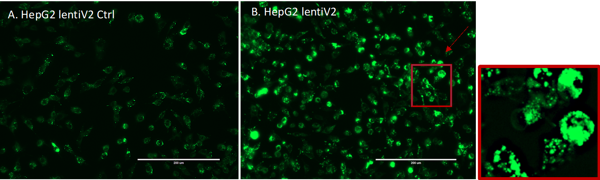Figure 8:EVOS Fluorescent Microscope Image Capture.
A. HepG2_lentiV2_Ctrl with no-viral transduction.
B. HepG2_lentiV2 with viral transduction.
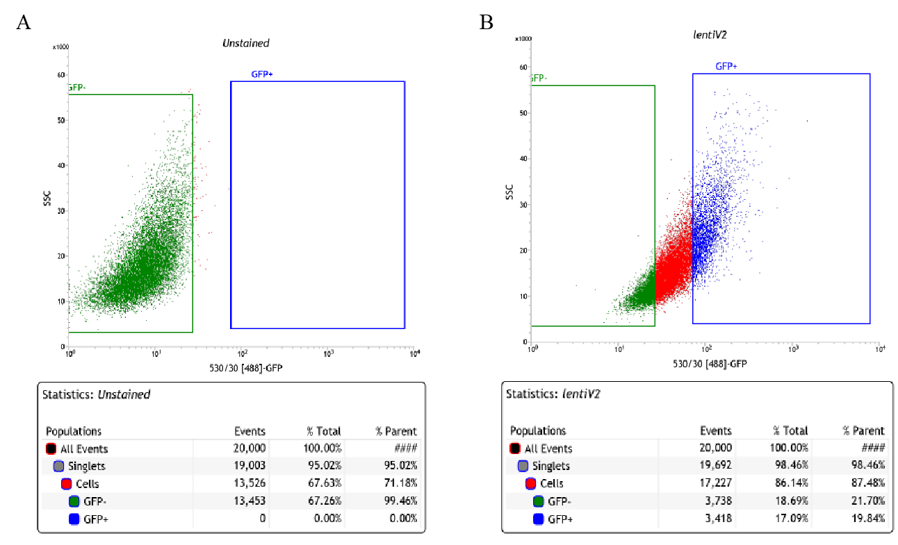Figure 9:Fluorescence-Activated Cell Sorting Gate Setting.
A. HepG2_UnStained WT.
B. HepG2_lentiV2 with viral transduction.
Figure 10:Verification of sgRNA cassette and lentiV2 transgene.
A. 20nt sgRNA cassette was verified in lentiV2 transduced genomic DNA population, 163 bp PCR product obtained, while WT HepG2 didn’t possess the cassette, thus, no PCR product.
B. lentiviral-specific transgene WPRE was verified in lentiV2 transduced genomic DNA population, while no transduced WT didn’t have the transgene, therefore, no 173 bp PCR product observed.
Figure 11:
Figure 12:Illumina library generation.
A. Construct for generating illumina libraries.
B. Final illumina library from HS DNA —showed a single ~285bp peak was generated.
LV603
Table 2: Pathways aligned to LV603 from the MultiPLIER models.
Pathway
AUC
FDR
IRIS Neutrophil-Resting
0.91
4.51e-35
SVM Neutrophils
0.98
1.43e-09
PID IL8CXCR2 PATHWAY
0.81
7.04e-03
SIG PIP3 SIGNALING IN B LYMPHOCYTES
0.77
1.95e-02
Table 3: Significant trait associations of LV603 in PhenomeXcan.
Trait description
Sample size
Cases
FDR
Myeloid White Cell Count
173,480
3.63e‑07
Sum Basophil Neutrophil Count
173,480
4.07e‑07
Neutrophil Count
173,480
4.17e‑07
Sum Neutrophil Eosinophil Count
173,480
4.72e‑07
Granulocyte Count
173,480
5.16e‑07
White Blood Cell Count
173,480
2.67e‑06
Neutrophill count
349,856
1.58e‑05
White blood cell (leukocyte) count
350,470
2.06e‑05
Table 4: Significant trait associations of LV603 in eMERGE.
Phecode
Trait description
Sample size
Cases
FDR
No significant associations
Gene modules enrichment for lipids gene-sets
Table 5: Gene modules (LVs) nominally enriched for the lipids-increasing gene-set from the CRISPR-screen (P < 0.01). LVs significantly aligned with pathways (FDR < 0.05) from the MultiPLIER models are shown in boldface.
Gene module
Lipids gene-set
Leading edge
p-value
LV246
increase
DGAT2, ACACA
0.0035
LV702
increase
ACACA, DGAT2
0.0046
LV607
increase
ACACA, DGAT2
0.0058
LV890
increase
ACACA, DGAT2
0.0067
LV74
increase
MBTPS1, DGAT2
0.0078
LV865
increase
ACACA, DGAT2
0.0092
LV841
increase
ACACA, DGAT2
0.0096
Table 6: Gene modules (LVs) nominally enriched for the lipids-decreasing gene-set from the CRISPR-screen (P < 0.01). LVs significantly aligned with pathways (FDR < 0.05) from the MultiPLIER models are shown in boldface.
Gene module
Lipids gene-set
Leading edge
p-value
LV520
decrease
FBXW7, TCF7L2
0.0006
LV801
decrease
UBE2J2, TCF7L2
0.0022
LV512
decrease
FBXW7, TCF7L2
0.0025
LV612
decrease
PTEN, FBXW7
0.0036
LV41
decrease
PCYT2, TCF7L2
0.0041
LV838
decrease
UBE2J2, TCF7L2
0.0070
LV302
decrease
TCF7L2, PTEN
0.0083
LV959
decrease
TCF7L2, PTEN
0.0092
LV246
Table 7: Pathways aligned to LV246 from the MultiPLIER models.
Pathway
AUC
FDR
REACTOME FATTY ACID TRIACYLGLYCEROL AND KETONE BODY METABOLISM
0.89
3.97e-16
REACTOME METABOLISM OF LIPIDS AND LIPOPROTEINS
0.67
1.14e-08
REACTOME TRIGLYCERIDE BIOSYNTHESIS
0.86
6.52e-04
KEGG PYRUVATE METABOLISM
0.82
2.66e-03
KEGG PROPANOATE METABOLISM
0.83
4.27e-03
Table 8: Significant trait associations of LV246 in PhenomeXcan.
Heel bone mineral density T-score, automated (right)
114,614
3.75e‑02
Heel quantitative ultrasound index, direct entry (right)
114,614
3.75e‑02
Days/week of moderate physical activity 10+ minutes
343,943
4.85e‑02
Ischaemic heart disease (wide definition)
361,194
20,857
4.97e‑02
Table 9: Significant trait associations of LV246 in eMERGE.
Phecode
Trait description
Sample size
Cases
FDR
276.41
Acidosis
41,838
1,526
2.40e‑03
276.4
Acid-base balance disorder
42,005
1,693
2.97e‑03
LV116
Table 10: Pathways aligned to LV116 from the MultiPLIER models.
Pathway
AUC
FDR
REACTOME INTERFERON SIGNALING
0.84
3.48e-09
SVM Macrophages M1
0.92
2.09e-05
REACTOME INTERFERON ALPHA BETA SIGNALING
0.94
3.36e-05
REACTOME CYTOKINE SIGNALING IN IMMUNE SYSTEM
0.67
1.53e-04
IRIS DendriticCell-LPSstimulated
0.65
1.09e-03
KEGG CYTOSOLIC DNA SENSING PATHWAY
0.84
3.22e-03
REACTOME NEGATIVE REGULATORS OF RIG I MDA5 SIGNALING
0.81
1.61e-02
LV931
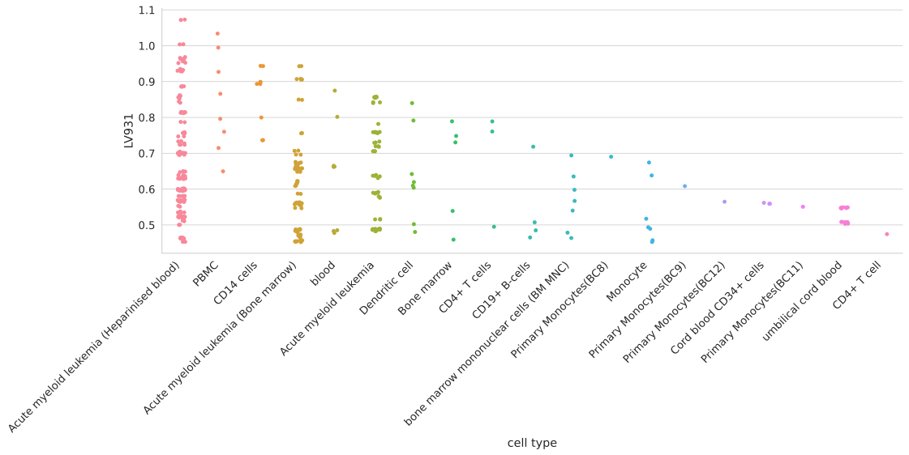Figure 13:Cell types for LV931.
Table 11: Pathways aligned to LV931 from the MultiPLIER models.
Pathway
AUC
FDR
MIPS SPLICEOSOME
0.63
3.13e-02
PID TGFBRPATHWAY
0.71
3.99e-02
LV66
Figure 14:Cell types for LV66.
Table 12: Pathways aligned to LV66 from the MultiPLIER models.
Pathway
AUC
FDR
REACTOME METABOLISM OF LIPIDS AND LIPOPROTEINS
0.62
3.12e-04
Agreement of consensus clustering partitions with the ensemble by number of clusters
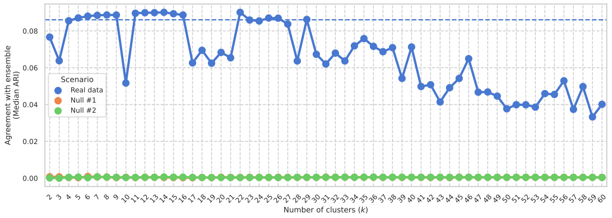Figure 15:Final selected partitions for follow-up analysis.
From all consensus clustering partitions generated with \(k\) from 2 to 60, we selected those with a median adjusted Rand index (ARI) with the ensemble members greater the 75th percentile.
Cluster-specific and general transcriptional processes associated with disease
Figure 16:Cluster-specific and general transcriptional processes associated with disease using novel LVs.
The plot shows a submatrix of \(\hat{\mathbf{M}}\) for the main trait clusters at \(k\)=29, considering only LVs (rows) that are not aligned with any pathway.
Standardized values from -6 (lighter color) to 21 (darker color).
LV928
Figure 17:Cell types for LV928.
Table 13: Pathways aligned to LV928 from the MultiPLIER models.
Pathway
AUC
FDR
DMAP ERY3
0.81
1.16e-24
DMAP ERY4
0.78
2.49e-17
Table 14: Significant trait associations of LV928 in PhenomeXcan.
Trait description
Sample size
Cases
Partition / cluster
FDR
Mean sphered cell volume
344,729
29 / 2
2.18e‑46
Mean reticulocyte volume
344,728
29 / 2
4.08e‑44
Mean corpuscular volume
350,473
29 / 2
5.57e‑33
Red blood cell (erythrocyte) distribution width
350,473
29 / 23
7.62e‑31
Reticulocyte percentage
344,728
29 / 4
2.12e‑29
Reticulocyte count
344,729
29 / 4
6.88e‑28
Reticulocyte Count
173,480
29 / 4
1.06e‑23
Mean corpuscular haemoglobin
350,472
29 / 2
7.89e‑23
High light scatter reticulocyte count
344,729
29 / 4
3.05e‑21
Immature reticulocyte fraction
344,728
29 / 4
5.04e‑21
High light scatter reticulocyte percentage
344,729
29 / 4
1.57e‑16
Red blood cell (erythrocyte) count
350,475
29 / 5
2.53e‑16
Red Blood Cell Count
173,480
29 / 5
2.62e‑09
Haemoglobin concentration
350,474
29 / 5
1.25e‑03
Haematocrit percentage
350,475
29 / 5
3.77e‑03
Table 15: Significant trait associations of LV928 in eMERGE.
Phecode
Trait description
Sample size
Cases
FDR
250.24
Type 2 diabetes with neurological manifestations
43,236
2,963
1.44e‑02
195
Cancer, suspected or other
50,040
2,250
2.42e‑02
514.2
Solitary pulmonary nodule
50,389
2,270
4.65e‑02
LV30
Figure 18:Cell types for LV30.
Table 16: Pathways aligned to LV30 from the MultiPLIER models.
Pathway
AUC
FDR
DMAP ERY3
0.95
5.62e-52
DMAP ERY4
0.98
5.28e-51
DMAP ERY5
0.98
1.96e-49
Table 17: Significant trait associations of LV30 in PhenomeXcan.
Trait description
Sample size
Cases
Partition / cluster
FDR
Mean reticulocyte volume
344,728
29 / 2
1.41e‑51
Immature reticulocyte fraction
344,728
29 / 4
5.79e‑40
Mean sphered cell volume
344,729
29 / 2
3.26e‑36
Mean corpuscular volume
350,473
29 / 2
3.18e‑35
Reticulocyte percentage
344,728
29 / 4
1.41e‑28
Mean corpuscular haemoglobin
350,472
29 / 2
3.72e‑28
High light scatter reticulocyte count
344,729
29 / 4
8.20e‑28
Reticulocyte count
344,729
29 / 4
2.13e‑26
Reticulocyte Count
173,480
29 / 4
1.11e‑24
High light scatter reticulocyte percentage
344,729
29 / 4
4.05e‑22
Table 18: Significant trait associations of LV30 in eMERGE.
Phecode
Trait description
Sample size
Cases
FDR
No significant associations
LV730
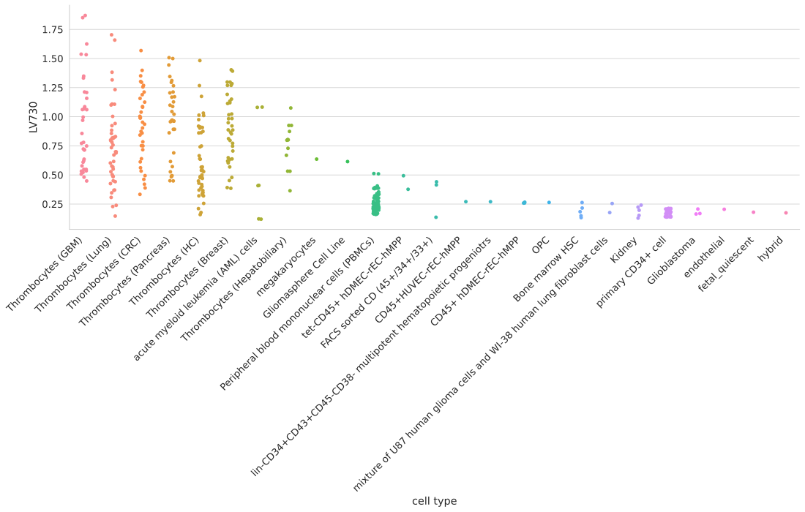Figure 19:Cell types for LV730.
Table 19: Pathways aligned to LV730 from the MultiPLIER models.
Pathway
AUC
FDR
DMAP MEGA2
0.82
2.64e-05
Table 20: Significant trait associations of LV730 in PhenomeXcan.
Trait description
Sample size
Cases
Partition / cluster
FDR
Platelet distribution width
350,470
29 / 1
2.88e‑13
Mean platelet (thrombocyte) volume
350,470
29 / 1
7.26e‑13
Platelet count
350,474
29 / 1
1.24e‑07
Platelet Count
173,480
29 / 1
1.21e‑06
Platelet crit
350,471
29 / 1
1.38e‑04
Table 21: Significant trait associations of LV730 in eMERGE.
Phecode
Trait description
Sample size
Cases
FDR
No significant associations
LV598
Figure 20:Cell types for LV598.
Table 22: Pathways aligned to LV598 from the MultiPLIER models.
Pathway
AUC
FDR
PID SYNDECAN 1 PATHWAY
0.81
1.20e-02
REACTOME COLLAGEN FORMATION
0.77
1.89e-02
Table 23: Significant trait associations of LV598 in PhenomeXcan.
Trait description
Sample size
Cases
Partition / cluster
FDR
6mm strong meridian (right)
66,256
29 / 10
3.21e‑07
6mm weak meridian (right)
66,256
29 / 10
2.04e‑06
6mm strong meridian (left)
65,551
29 / 10
2.44e‑06
3mm strong meridian (left)
75,398
29 / 10
2.53e‑06
6mm weak meridian (left)
65,551
29 / 10
1.20e‑05
3mm weak meridian (left)
75,398
29 / 10
1.58e‑05
3mm strong meridian (right)
75,410
29 / 10
2.95e‑05
3mm weak meridian (right)
75,410
29 / 10
3.86e‑05
Table 24: Significant trait associations of LV598 in eMERGE.
Phecode
Trait description
Sample size
Cases
FDR
No significant associations
LV844
Figure 21:Cell types for LV844.
Table 25: Pathways aligned to LV844 from the MultiPLIER models.
Pathway
AUC
FDR
KEGG ANTIGEN PROCESSING AND PRESENTATION
0.80
1.35e-03
Table 26: Significant trait associations of LV844 in PhenomeXcan.
Trait description
Sample size
Cases
Partition / cluster
FDR
Rheumatoid Arthritis
80,799
19,234
29 / 26
1.20e‑57
malabsorption/coeliac disease (self-reported)
361,141
1,587
29 / 8
1.25e‑43
Coeliac disease
361,194
842
29 / 8
1.52e‑41
Intestinal malabsorption (ICD10 K90)
361,194
922
29 / 8
5.28e‑40
Started insulin within one year diagnosis of diabetes
16,415
1,999
29 / 13
7.77e‑38
Systemic Lupus Erythematosus
23,210
7,219
29 / 26
6.45e‑35
Age diabetes diagnosed
16,166
29 / 13
1.92e‑34
Never eat: Wheat products
359,777
9,573
29 / 13
1.37e‑31
hyperthyroidism (self-reported)
361,141
2,730
29 / 13
3.41e‑30
Medication: insulin product
361,141
3,545
29 / 13
1.78e‑25
Insulin medication (females)
193,148
1,476
29 / 13
2.79e‑23
Insulin medication (males)
165,340
2,248
29 / 13
1.27e‑20
hypothyroidism (self-reported)
361,141
17,574
29 / 13
3.35e‑20
Medication: levothyroxine sodium
361,141
14,689
29 / 13
2.76e‑19
psoriasis (self-reported)
361,141
4,192
29 / 13
6.74e‑16
Table 27: Significant trait associations of LV844 in eMERGE.
Phecode
Trait description
Sample size
Cases
FDR
714.1
Rheumatoid arthritis
49,453
2,541
1.53e‑08
250.1
Type 1 diabetes
42,723
2,450
3.85e‑08
714
Rheumatoid arthritis and other inflammatory polyarthropathies
50,215
3,303
1.02e‑06
440
Atherosclerosis
47,471
4,993
6.73e‑03
578.8
Hemorrhage of rectum and anus
47,545
1,991
6.73e‑03
585.32
End stage renal disease
43,309
1,842
9.01e‑03
440.2
Atherosclerosis of the extremities
45,524
3,046
1.09e‑02
514.2
Solitary pulmonary nodule
50,389
2,270
1.39e‑02
444
Arterial embolism and thrombosis
43,378
900
2.97e‑02
440.22
Atherosclerosis of native arteries of the extremities with intermittent claudication
44,639
2,161
3.61e‑02
LV155
Figure 22:Cell types for LV155.
Table 28: Pathways aligned to LV155 from the MultiPLIER models.
Pathway
AUC
FDR
No pathways significantly enriched
Table 29: Significant trait associations of LV155 in PhenomeXcan.
Trait description
Sample size
Cases
Partition / cluster
FDR
hypothyroidism (self-reported)
361,141
17,574
29 / 13
1.65e‑03
hyperthyroidism (self-reported)
361,141
2,730
29 / 13
1.03e‑02
Medication: levothyroxine sodium
361,141
14,689
29 / 13
1.12e‑02
Table 30: Trait associations of LV155 in eMERGE.
Phecode
Trait description
Sample size
Cases
FDR
244.2
Acquired hypothyroidism
45,839
1,155
5.66e‑02
LV57
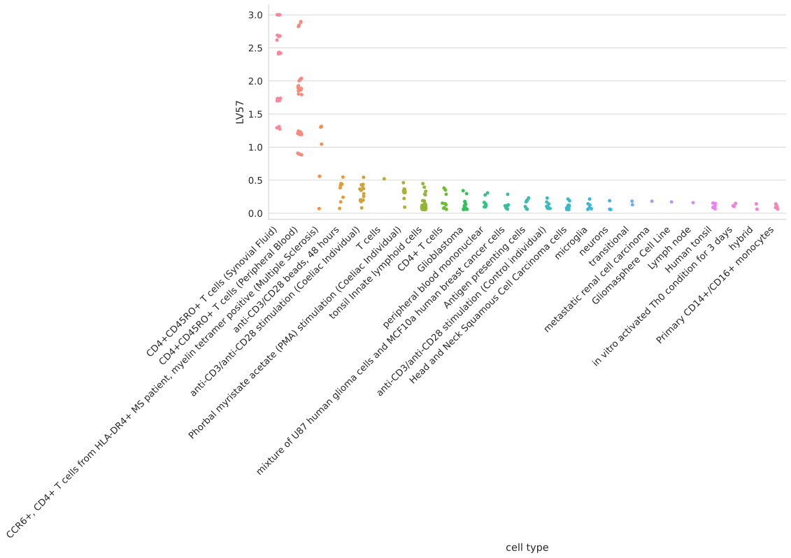Figure 23:Cell types for LV57.
Table 31: Pathways aligned to LV57 from the MultiPLIER models.
Pathway
AUC
FDR
KEGG T CELL RECEPTOR SIGNALING PATHWAY
0.70
1.26e-03
SVM T cells CD4 memory activated
0.79
2.59e-03
IRIS CD4Tcell-Th2-restimulated12hour
0.78
7.57e-03
KEGG ALLOGRAFT REJECTION
1.00
1.09e-02
Custom Treg
0.98
1.37e-02
PID NFAT TFPATHWAY
0.74
1.52e-02
IRIS MemoryTcell-RO-activated
0.70
2.87e-02
Table 32: Significant trait associations of LV57 in PhenomeXcan.
Trait description
Sample size
Cases
Partition / cluster
FDR
hypothyroidism (self-reported)
361,141
17,574
29 / 13
7.21e‑25
Medication: levothyroxine sodium
361,141
14,689
29 / 13
3.71e‑23
hyperthyroidism (self-reported)
361,141
2,730
29 / 13
8.93e‑07
Started insulin within one year diagnosis of diabetes
16,415
1,999
29 / 13
6.60e‑05
Medication: insulin product
361,141
3,545
29 / 13
5.20e‑04
Insulin medication (females)
193,148
1,476
29 / 13
9.40e‑04
Insulin medication (males)
165,340
2,248
29 / 13
3.63e‑03
Table 33: Significant trait associations of LV57 in eMERGE.
Phecode
Trait description
Sample size
Cases
FDR
244
Hypothyroidism
54,404
9,720
7.66e‑09
244.4
Hypothyroidism NOS
53,968
9,284
7.66e‑09
279
Disorders involving the immune mechanism
56,771
3,309
1.07e‑02
514.2
Solitary pulmonary nodule
50,389
2,270
2.62e‑02
714
Rheumatoid arthritis and other inflammatory polyarthropathies
50,215
3,303
3.77e‑02
LV54
Figure 24:Cell types for LV54.
Table 34: Pathways aligned to LV54 from the MultiPLIER models.
Pathway
AUC
FDR
No pathways significantly enriched
Table 35: Significant trait associations of LV54 in PhenomeXcan.
Trait description
Sample size
Cases
Partition / cluster
FDR
Intestinal malabsorption (ICD10 K90)
361,194
922
29 / 8
3.10e‑25
Coeliac disease
361,194
842
29 / 8
4.78e‑25
Never eat: Wheat products
359,777
9,573
29 / 13
3.93e‑23
Systemic Lupus Erythematosus
23,210
7,219
29 / 26
8.16e‑23
Started insulin within one year diagnosis of diabetes
16,415
1,999
29 / 13
2.57e‑20
hyperthyroidism (self-reported)
361,141
2,730
29 / 13
6.70e‑19
Medication: insulin product
361,141
3,545
29 / 13
3.62e‑18
Age diabetes diagnosed
16,166
29 / 13
9.20e‑18
malabsorption/coeliac disease (self-reported)
361,141
1,587
29 / 8
9.63e‑15
Insulin medication (males)
165,340
2,248
29 / 13
6.01e‑14
psoriasis (self-reported)
361,141
4,192
29 / 13
1.81e‑13
Rheumatoid Arthritis
80,799
19,234
29 / 26
2.17e‑13
Insulin medication (females)
193,148
1,476
29 / 13
2.61e‑12
Medication: levothyroxine sodium
361,141
14,689
29 / 13
4.25e‑10
hypothyroidism (self-reported)
361,141
17,574
29 / 13
2.49e‑08
Table 36: Significant trait associations of LV54 in eMERGE.
Phecode
Trait description
Sample size
Cases
FDR
250.1
Type 1 diabetes
42,723
2,450
1.69e‑13
244
Hypothyroidism
54,404
9,720
1.01e‑05
244.4
Hypothyroidism NOS
53,968
9,284
1.01e‑05
695
Erythematous conditions
48,347
4,210
8.54e‑05
714
Rheumatoid arthritis and other inflammatory polyarthropathies
50,215
3,303
6.58e‑04
440
Atherosclerosis
47,471
4,993
1.90e‑03
585
Renal failure
51,437
9,970
7.10e‑03
585.33
Chronic Kidney Disease, Stage III
46,279
4,812
7.49e‑03
585.32
End stage renal disease
43,309
1,842
7.49e‑03
250.6
Polyneuropathy in diabetes
41,948
1,675
8.55e‑03
250
Diabetes mellitus
52,531
12,258
1.02e‑02
285.2
Anemia of chronic disease
39,673
2,606
1.64e‑02
502
Postinflammatory pulmonary fibrosis
42,396
1,723
1.77e‑02
415.1
Acute pulmonary heart disease
49,887
1,857
1.88e‑02
285.21
Anemia in chronic kidney disease
38,616
1,549
2.53e‑02
585.3
Chronic renal failure [CKD]
49,204
7,737
2.62e‑02
743
Osteoporosis, osteopenia and pathological fracture
55,165
11,990
2.87e‑02
415.11
Pulmonary embolism and infarction, acute
49,867
1,837
3.04e‑02
577
Diseases of pancreas
60,538
1,795
3.06e‑02
585.1
Acute renal failure
46,803
5,336
3.23e‑02
195
Cancer, suspected or other
50,040
2,250
3.27e‑02
289.4
Lymphadenitis
47,564
3,078
3.67e‑02
440.2
Atherosclerosis of the extremities
45,524
3,046
4.52e‑02
LV847
Figure 25:Cell types for LV847.
Table 37: Pathways aligned to LV847 from the MultiPLIER models.
Pathway
AUC
FDR
KEGG SYSTEMIC LUPUS ERYTHEMATOSUS
0.74
1.86e-04
REACTOME MEIOTIC RECOMBINATION
0.78
3.60e-04
REACTOME RNA POL I TRANSCRIPTION
0.75
5.56e-04
REACTOME AMYLOIDS
0.76
2.17e-03
Table 38: Significant trait associations of LV847 in PhenomeXcan.
Trait description
Sample size
Cases
Partition / cluster
FDR
Mean corpuscular haemoglobin
350,472
29 / 2
7.34e‑73
Mean corpuscular volume
350,473
29 / 2
1.43e‑50
Blood pressure medication (females)
193,148
33,519
29 / 17
1.38e‑18
Heart attack, angina, stroke or hypertension
360,420
253,565
29 / 17
2.92e‑15
hypertension
360,420
97,139
29 / 17
4.82e‑14
hypertension (self-reported)
361,141
93,560
29 / 17
1.02e‑13
Medication: bendroflumethiazide
361,141
20,196
29 / 17
1.06e‑08
Mean sphered cell volume
344,729
29 / 2
2.16e‑08
Blood pressure medication (males)
165,340
40,987
29 / 17
1.14e‑07
Medication for cholesterol, blood pressure, diabetes, or take exogenous hormones (females)
193,148
133,338
29 / 17
1.21e‑06
Diastolic blood pressure, automated reading
340,162
29 / 17
2.93e‑06
Medication for cholesterol, blood pressure or diabetes (males)
165,340
110,372
29 / 17
5.01e‑06
Mean reticulocyte volume
344,728
29 / 2
8.38e‑03
Table 39: Significant trait associations of LV847 in eMERGE.
Phecode
Trait description
Sample size
Cases
FDR
585.32
End stage renal disease
43,309
1,842
3.11e‑08
443
Peripheral vascular disease
47,867
5,389
4.13e‑06
442.1
Aortic aneurysm
45,589
3,111
1.01e‑05
411.3
Angina pectoris
43,503
4,382
4.28e‑05
440.2
Atherosclerosis of the extremities
45,524
3,046
6.57e‑05
415.11
Pulmonary embolism and infarction, acute
49,867
1,837
9.90e‑05
416
Cardiomegaly
53,289
5,259
1.34e‑04
415.1
Acute pulmonary heart disease
49,887
1,857
1.49e‑04
599.3
Dysuria
42,858
3,581
1.74e‑04
585
Renal failure
51,437
9,970
3.90e‑04
411
Ischemic Heart Disease
54,275
15,154
1.19e‑03
531
Peptic ulcer (excl. esophageal)
59,472
1,561
2.26e‑03
250.6
Polyneuropathy in diabetes
41,948
1,675
2.32e‑03
443.9
Peripheral vascular disease, unspecified
46,926
4,448
2.40e‑03
519
Other diseases of respiratory system, not elsewhere classified
56,909
2,056
2.43e‑03
401.2
Hypertensive heart and/or renal disease
30,405
6,253
2.43e‑03
411.8
Other chronic ischemic heart disease, unspecified
44,123
5,002
2.71e‑03
440.22
Atherosclerosis of native arteries of the extremities with intermittent claudication
44,639
2,161
2.97e‑03
401.22
Hypertensive chronic kidney disease
28,944
4,792
5.61e‑03
514
Abnormal findings examination of lungs
54,668
6,549
6.96e‑03
427.6
Premature beats
31,575
2,453
1.27e‑02
585.1
Acute renal failure
46,803
5,336
1.39e‑02
418
Nonspecific chest pain
51,082
17,765
1.39e‑02
250.1
Type 1 diabetes
42,723
2,450
1.44e‑02
285.21
Anemia in chronic kidney disease
38,616
1,549
1.82e‑02
368
Visual disturbances
56,141
2,694
1.88e‑02
427.5
Arrhythmia (cardiac) NOS
36,861
7,739
2.01e‑02
687.1
Rash and other nonspecific skin eruption
47,039
4,964
2.15e‑02
185
Cancer of prostate
52,630
2,815
2.31e‑02
747
Cardiac and circulatory congenital anomalies
59,494
2,167
2.47e‑02
444
Arterial embolism and thrombosis
43,378
900
2.53e‑02
585.3
Chronic renal failure [CKD]
49,204
7,737
2.53e‑02
440
Atherosclerosis
47,471
4,993
2.62e‑02
591
Urinary tract infection
49,727
10,016
2.94e‑02
411.1
Unstable angina (intermediate coronary syndrome)
41,763
2,642
3.06e‑02
285.2
Anemia of chronic disease
39,673
2,606
3.06e‑02
274.1
Gout
59,252
3,394
3.23e‑02
585.34
Chronic Kidney Disease, Stage IV
43,322
1,855
3.84e‑02
452
Other venous embolism and thrombosis
40,476
3,816
4.49e‑02
427.12
Paroxysmal ventricular tachycardia
31,154
2,032
4.52e‑02
LV136
Figure 26:Cell types for LV136.
Pulmonary microvascular endothelial cells were exposed to hypoxia for 24 hours or more [108];
Table 40: Pathways aligned to LV136 from the MultiPLIER models.
Pathway
AUC
FDR
PID INTEGRIN1 PATHWAY
0.88
9.35e-06
KEGG ECM RECEPTOR INTERACTION
0.80
7.29e-05
REACTOME COLLAGEN FORMATION
0.87
2.00e-04
REACTOME MUSCLE CONTRACTION
0.75
1.49e-02
Table 41: Significant trait associations of LV136 in PhenomeXcan.
Table 43: Pathways aligned to LV93 from the MultiPLIER models.
Pathway
AUC
FDR
No pathways significantly enriched
Table 44: Significant trait associations of LV93 in PhenomeXcan.
Trait description
Sample size
Cases
Partition / cluster
FDR
CH2DB NMR
24,154
29 / 16
5.91e‑24
Reticulocyte Count
173,480
29 / 4
1.33e‑14
High light scatter reticulocyte count
344,729
29 / 4
2.52e‑13
Reticulocyte count
344,729
29 / 4
1.35e‑12
Reticulocyte percentage
344,728
29 / 4
4.93e‑11
High light scatter reticulocyte percentage
344,729
29 / 4
2.18e‑10
Immature reticulocyte fraction
344,728
29 / 4
2.31e‑08
Chronotype
128,266
29 / 16
9.73e‑04
HDL Cholesterol NMR
19,270
29 / 16
2.41e‑03
Table 45: Significant trait associations of LV93 in eMERGE.
Phecode
Trait description
Sample size
Cases
FDR
208
Benign neoplasm of colon
55,694
8,597
1.39e‑02
440.2
Atherosclerosis of the extremities
45,524
3,046
2.87e‑02
LV206
Figure 28:Cell types for LV206.
Table 46: Pathways aligned to LV206 from the MultiPLIER models.
Pathway
AUC
FDR
No pathways significantly enriched
Table 47: Significant trait associations of LV206 in PhenomeXcan.
Trait description
Sample size
Cases
Partition / cluster
FDR
CH2DB NMR
24,154
29 / 16
5.04e‑21
HDL Cholesterol NMR
19,270
29 / 16
5.20e‑03
Table 48: Significant trait associations of LV206 in eMERGE.
Phecode
Trait description
Sample size
Cases
FDR
458
Hypotension
51,341
4,432
3.06e‑02
286.9
Abnormal coagulation profile
48,006
800
3.39e‑02
458.9
Hypotension NOS
50,150
3,241
3.58e‑02
428.2
Heart failure NOS
48,178
3,584
3.71e‑02
LV260
Figure 29:Cell types for LV260.
Table 49: Pathways aligned to LV260 from the MultiPLIER models.
Pathway
AUC
FDR
No pathways significantly enriched
Table 50: Significant trait associations of LV260 in PhenomeXcan.
Trait description
Sample size
Cases
Partition / cluster
FDR
CH2DB NMR
24,154
29 / 16
4.35e‑17
HDL Cholesterol NMR
19,270
29 / 16
1.88e‑02
Table 51: Trait associations of LV260 in eMERGE.
Phecode
Trait description
Sample size
Cases
FDR
427.6
Premature beats
31,575
2,453
7.90e‑02
LV21
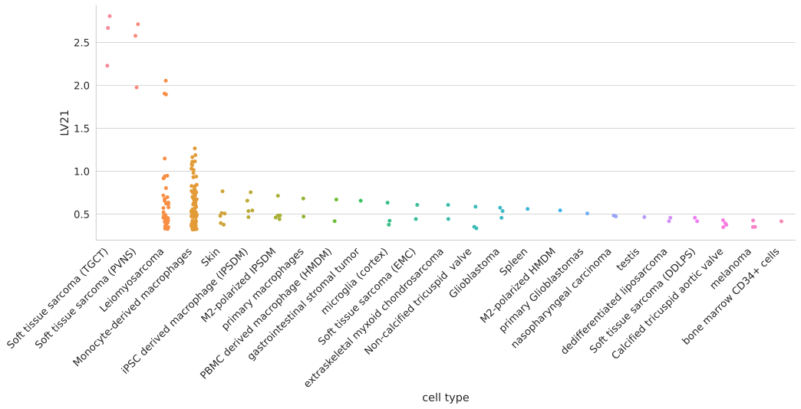Figure 30:Cell types for LV21.
Table 52: Pathways aligned to LV21 from the MultiPLIER models.
Pathway
AUC
FDR
No pathways significantly enriched
Table 53: Significant trait associations of LV21 in PhenomeXcan.
Trait description
Sample size
Cases
Partition / cluster
FDR
Alzheimers Disease
54,162
17,008
29 / 16
1.11e‑19
LDL Cholesterol NMR
13,527
29 / 16
9.53e‑05
Triglycerides NMR
21,559
29 / 16
1.74e‑02
Table 54: Trait associations of LV21 in eMERGE.
Phecode
Trait description
Sample size
Cases
FDR
573
Other disorders of liver
47,826
2,524
2.99e‑02
577
Diseases of pancreas
60,538
1,795
5.51e‑02
LV5
Figure 31:Cell types for LV5.
Table 55: Pathways aligned to LV5 from the MultiPLIER models.
Pathway
AUC
FDR
No pathways significantly enriched
Table 56: Significant trait associations of LV5 in PhenomeXcan.
Trait description
Sample size
Cases
Partition / cluster
FDR
LDL Cholesterol NMR
13,527
29 / 16
1.44e‑04
Triglycerides NMR
21,559
29 / 16
4.03e‑04
Alzheimers Disease
54,162
17,008
29 / 16
2.47e‑03
Ever had prolonged feelings of sadness or depression
117,763
64,374
29 / 27
6.92e‑03
Medication for depression
117,763
28,351
29 / 27
8.24e‑03
Recent feelings of depression
117,656
29 / 27
1.05e‑02
Ever contemplated self-harm
117,610
29 / 27
1.50e‑02
Recent lack of interest or pleasure in doing things
117,757
29 / 27
1.65e‑02
Amount of alcohol drunk on a typical drinking day
108,256
29 / 27
2.77e‑02
Ever sought or received professional help for mental distress
117,677
46,020
29 / 27
3.08e‑02
General happiness
117,442
29 / 27
3.73e‑02
Depression (diagnosed by a professional)
117,782
25,087
29 / 27
4.03e‑02
Table 57: Trait associations of LV5 in eMERGE.
Phecode
Trait description
Sample size
Cases
FDR
241
Nontoxic nodular goiter
47,842
3,158
1.92e‑02
241.1
Nontoxic uninodular goiter
47,125
2,441
6.84e‑02
LV434
Figure 32:Cell types for LV434.
HEK293 is a cell line derived from human embryonic kidney cells;
3T3 is a cell line derived from mouse embryonic fibroblasts.
Table 58: Pathways aligned to LV434 from the MultiPLIER models.
Pathway
AUC
FDR
No pathways significantly enriched
Table 59: Significant trait associations of LV434 in PhenomeXcan.
Trait description
Sample size
Cases
Partition / cluster
FDR
Attention Deficit Hyperactivity Disorder
53,293
19,099
29 / 21
5.62e‑03
Table 60: Significant trait associations of LV434 in eMERGE.
 0000-0002-3035-4403
·
0000-0002-3035-4403
·  miltondp
·
miltondp
·  miltondp
miltondp